데이터 분석가이자 마케팅 전략가로 쌓은 도메인 기반
광고 대행사에서 소비자를 읽는 법을 배웠고, IT 기업에서 데이터로 증명하는 법을 익혔습니다.
데이터 분석가이자 마케팅 전략가로 쌓은 도메인 기반
광고 대행사에서 소비자를 읽는 법을 배웠고, IT 기업에서 데이터로 증명하는 법을 익혔습니다. 지금 기획하는 모든 서비스의 판단 기준은 이 시절에 만들어졌습니다.
자사 경쟁력 강화를 위해 개발한 SNS 빅데이터 분석 프레임. 클릭하면 개요를 확인할 수 있습니다.
목적: 성장·신생 이슈 키워드 중 가장 중심적으로 언급되는 핵심 키워드를 식별해 주요 트렌드를 도출.
방법: 최근 1년 언급 증가율이 높은 키워드 간 연관성·중심성을 분석. 연관어 간 함께 언급된 문서 비율로 연관성을 계산하고, 각 키워드가 다른 키워드와 맺는 연관성 점수를 합산해 중심성 지수를 산출.
기대효과: 떠오르는 키워드 중 핵심 트렌드를 선도하는 단어를 도출해 전략적 마케팅·트렌드 분석에 활용.
목적: 정책 분야별 국민 체감도를 정량 분석해 핵심 정책을 파악하고 효율적 자원 배분·실행 전략을 수립.
방법: 언급량 TOP N 정책을 선정한 뒤 네이버 검색량과 SNS 언급량을 MIX(최댓값 100)해 수치화. 뉴스 원문을 제외해 국민 반응만 분석.
기대효과: 검색량과 SNS 언급량 차이를 보정해 정책 체감도를 통합 비교하고 국민 관심도·추세를 분석.
목적: 국민 관심 이슈와 사회관계장관회의 주제 간 일치도를 높이고 대응 방안을 마련.
방법: 현실 반영도(안건-이슈 일치 개수 ÷ 총 안건 수), 대응도(이슈 발생~안건 반영까지 걸린 시간), 호응도(안건 통과 후 언급량 변화) 3개 지표로 상관관계를 분석.
기대효과: 정책이 국민 요구에 얼마나 부합하는지 평가하고 정책 개선 방향을 제시.
목적: 성별·연령별·지역별로 세분화된 데이터를 분석해 각 그룹의 특성과 니즈를 반영한 인사이트를 도출.
방법: 세대·성별·지역별로 많이 이용하는 대표 카페/커뮤니티를 Seed로 지정해 데이터를 수집(예: 2030 디시인사이드, 여성 맘스홀릭, 부산 중고나라).
기대효과: 그룹별 관심사와 주요 이슈를 반영해 타겟 마케팅 전략과 시장 니즈에 부합하는 실행 방안을 제시.
목적: 소셜 데이터 내 긍·부정 표현을 주체와 긴밀히 연결해 감성 분석 정확성과 신뢰도를 강화.
방법: ⓑ 주체 비하·긍정 명칭(예: 윤무능/어대윤)을 주체와 연결, ⓒ 뉴스 전문에서 주체·논조를 추출해 댓글과 매칭, ⓓ 주체별 긍·부정 결과를 대시보드에 반영.
기대효과: 주체가 명확하지 않은 문장에서도 평가 대상을 식별해 감성 분석의 신뢰성과 품질을 향상.
목적: 고객사 관심 키워드의 부정 이슈·급상승 이슈를 실시간 탐지해 빠르게 대응하도록 얼랏을 발송.
방법: 뉴스·커뮤니티/SNS에서 키워드 데이터를 실시간 수집(10분~1시간). 부정 얼랏·급상승 얼랏·SNS 얼랏 조건 충족 시 텔레그램 API로 이슈 요약·통계를 발송.
기대효과: 부정·급상승 이슈를 신속히 파악해 효율적인 대응과 위기 관리를 지원.
기업·정부·공공기관 대상 소셜 빅데이터 분석 프로젝트. 클릭하면 상세 내용을 확인할 수 있습니다.
| 목적 | 소비자 데이터를 심층적으로 분석하여 서울대 트렌드 코리아 도서 발간을 위한 주요 트렌드 키워드를 도출하고, 2022~2023년의 사회적·산업적 변화 예측 기반 마련 |
| 배경 | 급변하는 소비자 니즈와 사회적 흐름을 데이터 기반으로 분석하여, 트렌드 변화를 반영한 학문적·실무적 인사이트를 제공하고자 함 |
| 사용 데이터 | SNS 소셜 데이터 (블로그, 커뮤니티, 카페, 트위터 등) / 주요 키워드: 코로나, 보복소비, 집, 동네, 파이어족, PPL, 등산, 중고거래, MBTI 등 다수 |
| 사용 도구 | Excel (데이터 정리 및 수치 분석) · PowerPoint (분석 결과 시각화 및 발표 자료 제작) · 코난테크놀로지의 소셜 데이터 분석 내부 툴 (데이터 수집, 키워드 추출 및 분석) |
| 분석 결과 | 트렌드 현황을 분석하고 내년도 트렌드 예측을 위한 데이터 기반 인사이트를 제공. 전체 목차별 주제에 맞는 트렌드 키워드와 관련된 이슈를 도출. 이 과정에서 텍스트 마이닝과 연관어 분석 등을 활용하여 소비자 관심사와 행동 패턴을 심층적으로 분석하고, 정량적 데이터를 기반으로 보고서를 완성 (예: MZ세대 관심 '운동' 종목은 무엇인가? / 향후 떠오를 '기술' 키워드는 무엇인가? 등) |
| 성과 | 『2022~2023 트렌드 코리아』 도서 발간에 데이터 분석으로 기여 |
| 역할(Role) | Research Proposal Writing · Analysis Frame Design · Data Cleaning · Data Analysis · Analysis Report Writing · Presentation |
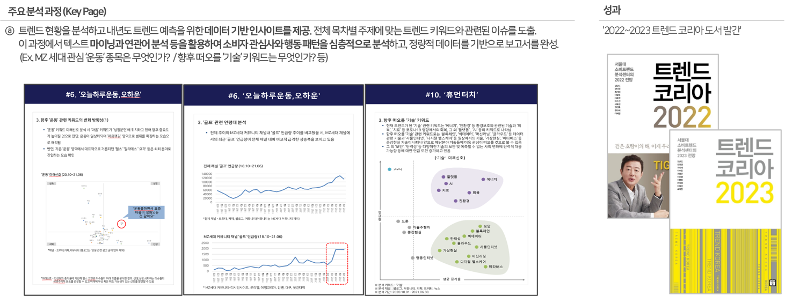
| 목적 | 소비자 데이터 분석을 통해 앤티앤스프레즐의 신제품 기획 컨셉을 제안하고 출시 성공 가능성을 높이기 위한 기반 마련 |
| 배경 | 디저트 선택 시 소비자들이 중요하게 고려하는 요소들을 데이터 기반으로 분석하여, 신제품 개발 시 소비자 니즈를 충족시킬 수 있는 차별화된 아이디어 도출 |
| 사용 데이터 | SNS 소셜 데이터 약 100만 건 비정형 텍스트 데이터 (블로그, 카페, 인스타그램 등) / 주요 키워드: 디저트 등 |
| 사용 도구 | Excel (데이터 정리 및 수치 분석) · PowerPoint (분석 결과 시각화 및 발표 자료 제작) · 코난테크놀로지의 소셜 데이터 분석 내부 툴 (데이터 수집, 키워드 추출 및 분석) |
| 분석 결과 ① | 디저트 선택 시 소비자들이 중요하게 고려하는 요소를 '메뉴', '원재료', '식감'으로 분류 |
| 분석 결과 ② | '원재료' 중에서도 특히 '흑임자'는 유행 직전의 재료로 긍정적 관심이 점차 증가하고 있음을 확인 |
| 분석 결과 ③ | 중심성 분석을 통해 '꾸덕한 식감', '치즈'가 흑임자와 높은 연관성을 보이며 긍정적인 언급과 자주 함께 등장한다는 점을 발견 |
| 분석 결과 ④ | '디저트' 소셜 데이터 언급량의 경우 2~4월 시기 언급량 증가하고 있으니, 앤티앤스프레즐의 2~4월 판매량은 하락세임을 확인 |
| 결론 | 흑임자와 크림치즈의 '꾸덕한 식감'을 결합한 신제품 "흑임자 크림치즈 스틱" 기획 및 홍보방향 도출 + '봄 시즌 제품'으로 제안 |
| 성과 | 과학기술정보통신부/한국지능정보사회진흥원 주관 '빅데이터 분석 활용 지원사업 우수 사례집'에 우수 분석 사례로 소개 · 앤티앤스 프레즐 '흑임자 크림치즈 스틱' 출시 및 성황리 판매 |
| 역할(Role) | Research Proposal Writing · Analysis Frame Design · Data Cleaning · Data Analysis · Analysis Report Writing · Presentation |
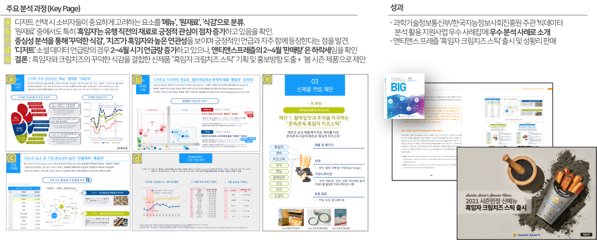
| 목적 | 소비자 리뷰 데이터를 기반으로 미래생활 화장지 제품의 강점과 개선점을 도출하고, 브랜드 경쟁력 강화를 위한 전략 제안 |
| 배경 | 소비자 리뷰 데이터를 통해 가격, 주요 구매 고려 요인(KBF), 프로모션, TPO에 대한 소비자 반응을 분석하고, 상품별 긍정적 및 부정적 요소를 파악하여 개선 방향을 마련 |
| 사용 데이터 | 리뷰 데이터 및 평점 데이터 약 7만 건 (지마켓, 옥션, 쿠팡, 홈앤쇼핑의 소비자 리뷰 데이터) |
| 사용 도구 | Excel (데이터 정리 및 수치 분석) · PowerPoint (분석 결과 시각화 및 발표 자료 제작) · 코난테크놀로지의 소셜 데이터 분석 내부 툴 (데이터 수집, 키워드 추출 및 분석) |
| 분석 결과 ① | 소비자 리뷰 데이터를 기반으로 미래생활 화장지 제품의 주요 구매 고려 요인(KBF)을 도출: 향 > 두께 > 성분 > 먼지 > 길이 > 촉감 순 |
| 분석 결과 ② | 자사 제품에 대해서는 긍정요인은 천연 '성분', 부드러운 '촉감'으로 나타났으며, 부정요인은 뜯을때 나는 '먼지', '독한향'으로 나타남 |
| 분석 결과 ③ | 타사와의 경쟁구도는 '크리넥스 > 깨끗하나라 > 한예지…' 등. 타사 대비 아쉬운 요인 '먼지'. 반면 경쟁사 대비 '편의성'이 높다는 측면에서 차별적 우위 |
| 분석 결과 ④ | 타겟별 리뷰 분석 시, 주 고객층인 여성의 경우 '먼지' '향'에 보다 민감하게 반응하는 것이 확인됨 (이는 자사의 부정속성으로 나타난 항목) |
| 분석 결과 ⑤ | 유통채널별 프로모션에 대한 반응 분석 시, 지마켓 빅스마일데이와 옥션 먼데이 행사에 대한 반응이 가장 높아 효과적이었던 것으로 보임 |
| 결론 | 분석결과를 바탕으로 먼지 발생 최소화, '향 강도 조정', '프리미엄 라인업 확장' 등 제품 개선 방안을 도출. 프로모션 채널 추천 |
| 성과 | 소비자 리뷰 분석을 통해 '먼지날림' 향 개선 후 매출 증가 · 미래생활 홈페이지 리뉴얼 오픈 이벤트 성황리 진행 · 채널별 맞춤형 프로모션 실행으로 매출 기여도 증가 |
| 역할(Role) | Research Proposal Writing · Analysis Frame Design · Data Cleaning · Data Analysis · Analysis Report Writing · Presentation |
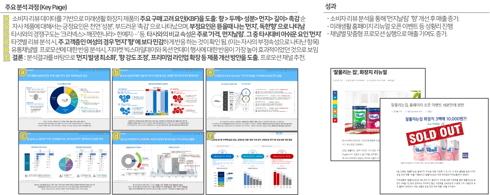
| 목적 | KT&G의 릴 에이블 및 에임 제품군에 대한 온라인 반응을 분석하여, 신제품 출시 및 개선 방향성을 제안 |
| 배경 | 경쟁사 아이코스가 신제품 출시를 발표하며 시장의 관심이 급격히 높아진 상황에서, KT&G는 릴 에이블 및 에임 제품군에 대한 소비자 반응을 면밀히 분석할 필요성을 느낌 |
| 사용 데이터 | 소셜 게시 데이터 — 카페, 트위터, 커뮤니티, 블로그 등 약 3천 건 / 주요 키워드: 릴 에이블, 아이코스, 글로 등 |
| 사용 도구 | Excel (데이터 정리 및 수치 분석) · PowerPoint (분석 결과 시각화 및 발표 자료 제작) · 코난테크놀로지의 소셜 데이터 분석 내부 툴 (데이터 수집, 키워드 추출 및 분석) |
| 분석 결과 ① | 릴 에이블의 주요 경쟁자수가 높은 것으로 분석되는 브랜드는 '아이코스 > 글로' 순이며, 자사 제품으로는 '릴 하이브리드 > 릴 솔리드'로 나타남 |
| 분석 결과 ② | 릴 에이블이 경쟁사 대비 약점으로 나타나고 있는 부분은 '디자인 및 디스플레이(33.1%)'로 나타남. 특히 '리모콘 같은 디자인'이라는 혹평 다수. 반면, 경쟁사 대비 '편의성'이 높다는 측면에서는 차별적 우위 |
| 분석 결과 ③ | 전자담배의 스틱인 '에임 베이퍼 스틱'에 대해서는 타 제품 대비 '맛이 인공적이다'라는 부정적 혹평 나타나고 있음 |
| 결론 | '릴 에이블'의 경우 경쟁사 대비 '연무량'에 대해 차별적 우위 점하고 있어 장점을 부각하는 노력 필요하며, '릴 에이블' 제품 디자인 개선 고려. 베이퍼 스틱의 경우 강한 멘솔향에 '인공적'이라는 부정 반응 나타나고 있어, 맛 개선 고려를 제안 |
| 활용 | 디자인 대폭 변경한 '릴 에이블 2.0' 출시 (편의성 강화) — '리모콘 같은 디자인' 혹평 개선 · 시원한 맛으로 개선한 '베이퍼 스틱' 신제품 2종 출시 — 인공적인 맛과 지나치게 강한 멘솔 개선 |
| 역할(Role) | Research Proposal Writing · Analysis Frame Design · Data Cleaning · Data Analysis · Analysis Report Writing · Presentation |
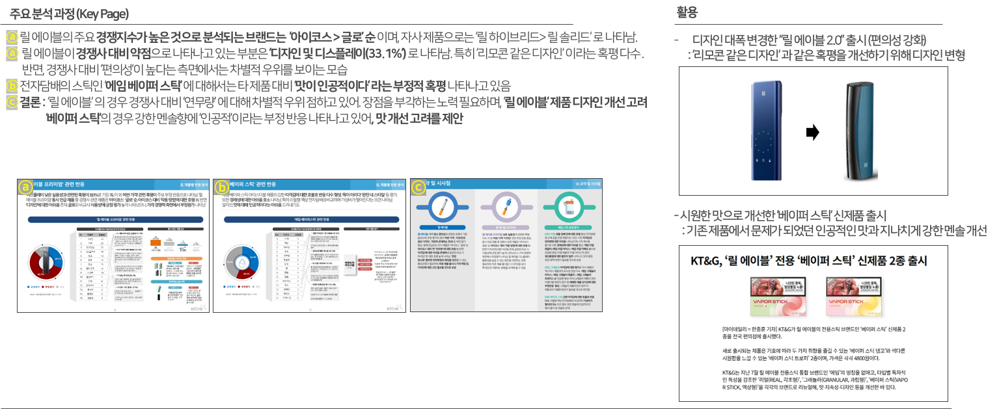
| 목적 | MZ세대의 온라인 콘텐츠 소비 특성을 이해하고, 이를 통해 프로스포츠와 디지털 미디어 간의 접점을 탐색하여 스포츠 산업의 활성화 방안 제안 |
| 배경 | MZ세대는 디지털 환경에 익숙하고, 모바일 중심의 소비 패턴을 보이는 세대로, 스포츠 영상 콘텐츠와의 연관성을 분석해 스포츠 디지털 전략 수립을 지원 |
| 사용 데이터 | SNS 소셜 데이터 약 332만 건 (인스타그램, 뉴스, 유튜브, 커뮤니티 등) / 2018년 1월 1일~2019년 11월 20일 (약 1년 11개월) / 주요 키워드: 콘텐츠 |
| 사용 도구 | Excel (데이터 정리 및 수치 분석) · PowerPoint (분석 결과 시각화 및 발표 자료 제작) · 코난테크놀로지의 소셜 데이터 분석 내부 툴 (데이터 수집, 키워드 추출 및 분석) |
| 분석 결과 ① | 시간대별 콘텐츠 소비 패턴 — 사진/텍스트 콘텐츠: 평일 오후 틈틈이 / 동영상 콘텐츠: 언제 어디서나 / 게임 콘텐츠: 평일·주말 저녁 |
| 분석 결과 ② | 상황별 콘텐츠 소비 패턴 — 지루한 이동시간엔 '게임'과 '오디오' 콘텐츠를 주로 소비 |
| 분석 결과 ③ | 스포츠 콘텐츠는 일반 콘텐츠와 비교해 '게임'과 '오디오'의 비중이 높게 나타나는 편이며, '사진, 텍스트, 영상'은 소폭 낮은 편 |
| 분석 결과 ④ | '게임' 콘텐츠 전반에 대한 심층 분석 결과, 게임의 성장 이유는 'e스포츠'의 '팬덤 문화'가 일부 작용한 것으로 분석됨 |
| 결론 | 분석 결과를 바탕으로, 선수 중심의 '팬덤 강화' 전략을 수립 + 소비자 참여형의 콘텐츠 제작 방향 제시 |
| 성과 | 한국프로스포츠 협회 출판물 '소셜빅데이터 2019' 수록 |
| 역할(Role) | Research Proposal Writing · Analysis Frame Design · Data Cleaning · Data Analysis · Analysis Report Writing · Presentation |
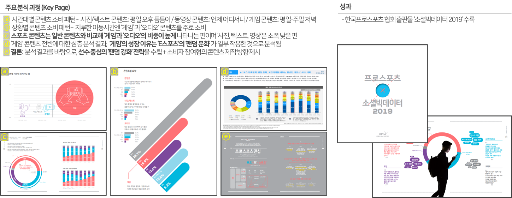
| 목적 | 2022년 대통령 선거 당일 진행될 토론의 주제와 논의 방향 설정을 위해 주요 이슈와 여론 흐름에 관한 데이터를 MBC에 제공 |
| 배경 | 대선 후보 및 주요 이슈에 대한 시민들의 관심사와 의견을 데이터로 도출하여, 선거 당일의 토론이 실질적이고 시의적절한 주제를 다룰 수 있도록 지원 |
| 사용 데이터 | 소셜 빅데이터 약 500만 건 (트위터, 카페, 커뮤니티 등) / 주요 키워드: 이재명, 윤석열 |
| 사용 도구 | Excel (데이터 정리 및 수치 분석) · PowerPoint (분석 결과 시각화 및 발표 자료 제작) · 코난테크놀로지의 소셜 데이터 분석 내부 툴 (데이터 수집, 키워드 추출 및 분석) |
| 분석 결과 | 주요 후보(이재명, 윤석열)와 관련된 이슈에 대한 최근 시민들의 관심 분포 양상을 분석. 당시 이재명 후보 급부상 이슈는 '특검', 윤석열 급부상 이슈는 '부산저축은행'이 대표적 |
| 활용 | 대선 당일 중앙선거방송토론위원회가 주관하는 제20대 대통령 선거 후보자 토론회에 분석 자료가 토론 주제로 활용됨 |
| 역할(Role) | Research Proposal Writing · Analysis Frame Design · Data Cleaning · Data Analysis · Analysis Report Writing · Presentation |
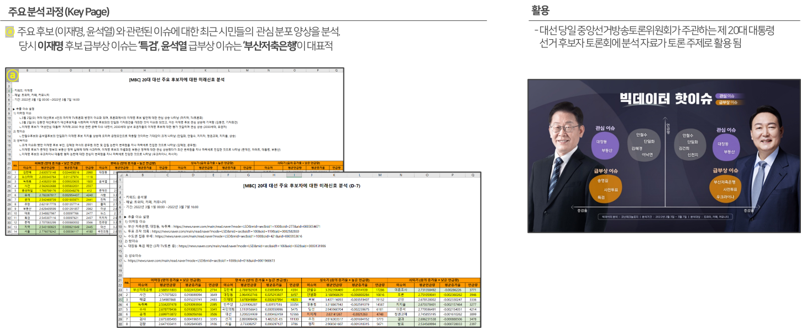
| 목적 | 청와대 부동산 정책에 대한 시민 반응을 빅데이터 기반으로 분석하여 정책 방향성 제안 및 효과적인 개선 방안 도출 |
| 배경 | 정권 교체 후 집값 안정화와 관련된 정책이 사회적 논란과 기대를 동시에 받는 상황에서, 주요 이슈와 정책의 긍정·부정 반응을 구체적으로 이해하고자 함 |
| 사용 데이터 | SNS 소셜 데이터 (네이버/다음 뉴스 및 댓글, 커뮤니티, 트위터 등 총 34개 채널) |
| 사용 도구 | Excel (데이터 정리 및 수치 분석) · PowerPoint (분석 결과 시각화 및 발표 자료 제작) · 코난테크놀로지의 소셜 데이터 분석 내부 툴 (데이터 수집, 키워드 추출 및 분석) |
| 분석 결과 ① | 정책별 언급량과 언급증가율을 2×2 매트릭스로 분석: 언급량 높고 언급 상승률도 높은 '중점 관리 정책' 부문으로는 '종부세', '대출규제', '보유세', '재산세', '사전청약' 키워드 등이 나타남 |
| 분석 결과 ② | 특히 일반 채널과 고관여 채널(부동산 전문 커뮤니티) 비교 분석: '일반채널'은 '정치적이슈인 나의혹' 등 사회적 논란에 관심, '고관여 채널'은 '대출규제' '공급' 등 실질적 투자에 관심. 고관여 채널에서는 집값 하락 전망에 긍정적으로 반응하며 긍정률 상승폭이 일반 채널 대비 높게 나타남 |
| 분석 결과 ③ | '중점관리정책' 중 긍정률 상위 TOP1은 '사전청약'으로 나타났으며, 긍정률 하위 TOP1은 '재산세'로 나타남 |
| 분석 결과 ④ | '사전청약'에 대한 여론 중 '공급물량에 대한 관심 및 기대'가 (27.5%)로 가장 높게 나타났으나, 분양가에 대해 일부 너무 비싸다는 논란 또한 형성되는 양상 |
| 분석 결과 ⑤ | '재산세'에 대한 여론 중 '이중과세'라는 불만 다수 형성(51.6%), 부동산세금마다 다른 기준 및 자주 변경되는 세법으로 인한 혼란이 뒤를 이음(34.2%) |
| 결론 | '사전청약'은 추가 활성화가 필요하나 분양가 검토 필요. '재산세'는 개선이 시급한 과제로 세금 정책에 대한 '불합리성' 논란 해소 커뮤니케이션 요구. 시민들이 '종부세'와 '재산세'를 혼동해 '이중과세'라고 언급하는 경우가 많으므로 종부세와 구분된 재산세의 부과 의도를 홍보할 것을 제안 |
| 성과 | 시민의 숨겨진 니즈를 데이터 기반으로 체계적으로 분석·정책별 우선순위를 제안하여 정책 의사결정 과정에 실질적인 기여 |
| 역할(Role) | Research Proposal Writing · Analysis Frame Design · Data Cleaning · Data Analysis · Analysis Report Writing · Presentation |
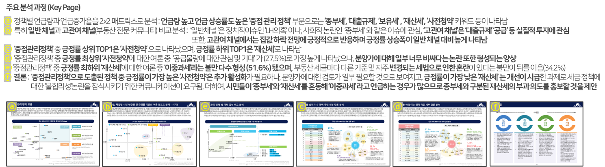
| 목적 | 국민 여론 데이터를 기반으로 포용국가 사회정책에 대한 시민의 인식, 관심사, 개선 요구사항을 분석하여 정책 방향성 제안 |
| 배경 | 주요 사회정책에 대한 국민 평가를 바탕으로 정책 추진 과정에서 나타난 호응 및 문제점을 도출 |
| 사용 데이터 | SNS 비정형 텍스트 데이터 약 5,467만 건 (뉴스, 댓글, 카페, 트위터, 블로그 등) / 주요 키워드: 돌봄, 배움, 환경안전, 건강, 노후 등 관련 이슈 |
| 사용 도구 | Excel (데이터 정리 및 수치 분석) · PowerPoint (분석 결과 시각화 및 발표 자료 제작) · 코난테크놀로지의 소셜 데이터 분석 내부 툴 (데이터 수집, 키워드 추출 및 분석) |
| 분석 결과 ① | 긍정여론 분포도 분석: 언급량(X축)과 긍정률(Y축) 분포도로, 긍정률이 높은 '활성화 요구 부문' '최고성과 부문'의 경우 '돌봄/배움' 분야 정책이 多. 긍정률이 낮은 '최하성과부문', '개선필요부문'에는 '환경안전/일' 분야의 정책이 多 |
| 분석 결과 ② | 국민 주요 관심 이슈와 사회관계장관회의 의제 간 관계 분석: 배움분야(장애학생 지원등)의 현실 대응도가 높고, 쉼 분야(게임 셧다운제 등)는 낮음 |
| 분석 결과 ③ | 최고성과 부문의 '돌봄' 분야의 강점은 '다문화 가족지원 활성화' 사업. 세부 데이터 결과에 따라, 다문화 자녀대상 진로교육 등의 활동을 지속 활성화할 것을 제언 |
| 분석 결과 ④ | 최하성과 부문의 '환경안전' 분야의 약점은 '아동/여성 폭력 피해 보호 및 지원'으로 나타남. 세부 데이터 결과에 따라, 아동학대의 경우 감시인력 충원 및 보육교사 처우 개선 등을 제언 |
| 결론 | 개선 필요 부문 정책의 주요 내용인 '아동/여성 폭력 피해 보호 및 지원' 분야에 대한 추가 세부 제언으로, '아동/여성 폭력의 법적 처벌에 대한 공청회 기획', '폭력 SNS 상담', '원스톱 서비스 마련' 등을 제안 |
| 성과 | 사회정책 추진과정에서 국민의 의견을 반영할 수 있는 구체적 방향성 제시. 주요 이슈와 정책 관계를 분석하여 정책적 우선순위 설정에 기여 |
| 역할(Role) | Research Proposal Writing · Analysis Frame Design · Data Cleaning · Data Analysis · Analysis Report Writing · Presentation |
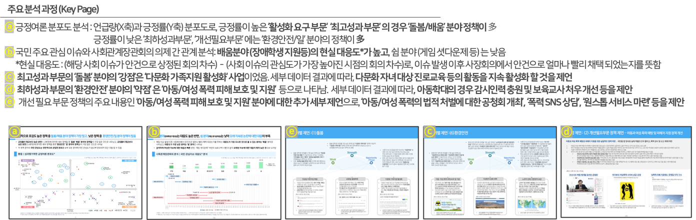
| 목적 | KT&G 브랜드 및 제품에 대한 소셜 데이터를 실시간으로 수집·분석하여 여론 동향 파악 및 위기 대응 체계 구축 |
| 배경 | 소셜 미디어상에서 자사 브랜드와 경쟁사에 대한 소비자 반응을 상시 모니터링하고, 이슈 발생 시 신속한 대응이 가능한 시스템 운영 필요 |
| 사용 데이터 | SNS 소셜 데이터 (뉴스, 커뮤니티, 블로그, 트위터 등) — 상시 수집 |
| 사용 도구 | Excel (데이터 정리 및 수치 분석) · PowerPoint (분석 결과 시각화 및 보고서 제작) · 코난테크놀로지의 소셜 데이터 분석 내부 툴 (데이터 수집, 키워드 추출 및 분석) |
| 시스템 기획 | 데이터 수집 범위 설정, 키워드 분류 사전 구축 및 분석 세부 항목 수립, UI 설계 및 고객사 커뮤니케이션 진행, 정기 디버깅 및 시스템 개선 사항 수립 |
| 시스템 주요 기능 | 제품 속성별 / 제품 브랜드별 / 경쟁사 브랜드별 / 주요 키워드별 / 미래 흐름 분석 |
| 위기 얼랏 | SNS 및 언론 보도에서 특정 키워드가 특정 기준 이상 높게 나타나거나, 특정 패턴을 띄며 나타날 경우 텔레그램 알림 발송 — 실시간 대응 체계 강화 및 시스템 고도화 |
| 분석 보고서 | 신제품 반응 분석, 경쟁사 제품 비교 분석, CSR 활동 반응 분석, 언론 보도 현황 및 반응 분석 등 (Weekly / Issue Report) |
| 역할(Role) | Research Proposal Writing · Analysis Frame Design · Data Cleaning · Data Analysis · Analysis Report Writing · Presentation |
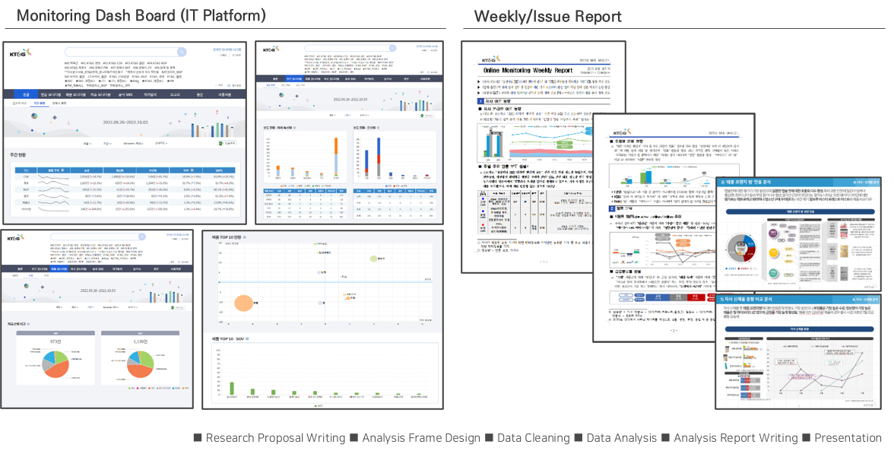
| 목적 | 통일부 관련 이슈에 대한 소셜 데이터를 실시간으로 수집·분석하여 시민 여론 동향 파악 및 위기 대응 체계 구축 |
| 배경 | 통일·북한 관련 이슈에 대한 시민 반응을 상시 모니터링하고, 정책 이슈 발생 시 신속한 여론 파악이 가능한 시스템 운영 필요 |
| 사용 데이터 | SNS 소셜 데이터 (뉴스, 커뮤니티, 블로그, 트위터 등) — 상시 수집 |
| 사용 도구 | Excel (데이터 정리 및 수치 분석) · PowerPoint (분석 결과 시각화 및 보고서 제작) · 코난테크놀로지의 소셜 데이터 분석 내부 툴 (데이터 수집, 키워드 추출 및 분석) |
| 시스템 기획 | 데이터 수집 범위 설정, 키워드 분류 사전 구축 및 분석 세부 항목 수립, UI 설계 및 고객사 커뮤니케이션 진행, 정기 디버깅 및 시스템 개선 사항 수립 |
| 시스템 주요 기능 | 뉴스 / 이슈 / 정책별 / 도시별 모니터링 — 언급량, 긍·부정률, 미래 흐름 분석 등 |
| 위기 얼랏 | SNS 및 언론 보도에서 특정 키워드가 특정 기준 이상 높게 나타나거나, 특정 패턴을 띄며 나타날 경우 텔레그램 알림 발송 — 실시간 대응 체계 강화 및 시스템 고도화 |
| 분석 보고서 | 통일/북한 관련 이슈에 대한 시민 여론 분석 (Daily / Weekly / Monthly Report) |
| 역할(Role) | Research Proposal Writing · Analysis Frame Design · Data Cleaning · Data Analysis · Analysis Report Writing · Presentation |
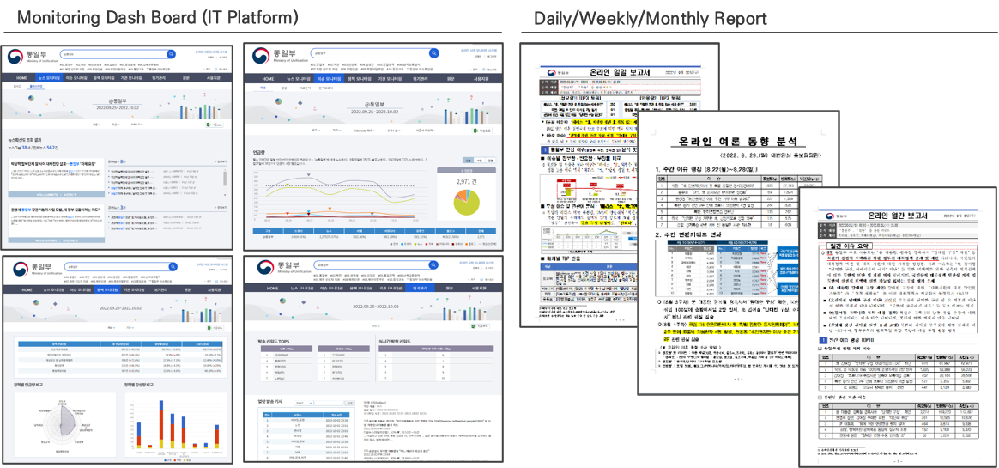
| 목적 | 서울시 정책 및 관련 이슈에 대한 소셜 데이터를 실시간으로 수집·분석하여 시민 여론 동향 파악 및 위기 대응 체계 구축 |
| 배경 | 서울시 정책 및 서울시장 관련 이슈에 대한 시민 반응을 상시 모니터링하고, 도시 브랜드 및 주요 정책 이슈에 대한 여론 분석 필요 |
| 사용 데이터 | SNS 소셜 데이터 (뉴스, 커뮤니티, 블로그, 트위터 등) — 상시 수집 |
| 사용 도구 | Excel (데이터 정리 및 수치 분석) · PowerPoint (분석 결과 시각화 및 보고서 제작) · 코난테크놀로지의 소셜 데이터 분석 내부 툴 (데이터 수집, 키워드 추출 및 분석) |
| 시스템 기획 | 데이터 수집 범위 설정, 키워드 분류 사전 구축 및 분석 세부 항목 수립, UI 설계 및 고객사 커뮤니케이션 진행, 정기 디버깅 및 시스템 개선 사항 수립 |
| 시스템 주요 기능 | 뉴스 / 이슈 / 정책별 / 도시별 모니터링 — 언급량, 긍·부정률, 미래 흐름 분석 등 |
| 위기 얼랏 | SNS 및 언론 보도에서 특정 키워드가 특정 기준 이상 높게 나타나거나, 특정 패턴을 띄며 나타날 경우 텔레그램 알림 발송 — 실시간 대응 체계 강화 및 시스템 고도화 |
| 분석 보고서 | 서울시 정책 및 서울시장 관련 이슈에 대한 시민 여론 분석, 서울시 도시 브랜드 개편에 대한 빅데이터 분석, 서울시 명소에 대한 분석 등 (Daily / Weekly / Issue Report) |
| 역할(Role) | Research Proposal Writing · Analysis Frame Design · Data Cleaning · Data Analysis · Analysis Report Writing · Presentation |

| 목적 | 부산시 정책 및 관련 이슈에 대한 소셜 데이터를 실시간으로 수집·분석하여 시민 여론 동향 파악 및 위기 대응 체계 구축 |
| 배경 | 부산시 정책 및 부산시장 관련 이슈에 대한 시민 반응을 상시 모니터링하고, 도시 관광·축제 등 주요 사안에 대한 여론 분석 필요 |
| 사용 데이터 | SNS 소셜 데이터 (뉴스, 커뮤니티, 블로그, 트위터 등) — 상시 수집 |
| 사용 도구 | Excel (데이터 정리 및 수치 분석) · PowerPoint (분석 결과 시각화 및 보고서 제작) · 코난테크놀로지의 소셜 데이터 분석 내부 툴 (데이터 수집, 키워드 추출 및 분석) |
| 시스템 기획 | 데이터 수집 범위 설정, 키워드 분류 사전 구축 및 분석 세부 항목 수립, UI 설계 및 고객사 커뮤니케이션 진행, 정기 디버깅 및 시스템 개선 사항 수립 |
| 시스템 주요 기능 | 뉴스 / 이슈 / 정책별 / 도시별 모니터링 — 언급량, 긍·부정률, 미래 흐름 분석 등 |
| 위기 얼랏 | SNS 및 언론 보도에서 특정 키워드가 특정 기준 이상 높게 나타나거나, 특정 패턴을 띄며 나타날 경우 텔레그램 알림 발송 — 실시간 대응 체계 강화 및 시스템 고도화 |
| 분석 보고서 | 부산시 정책 및 부산시장 관련 이슈에 대한 시민 여론 분석, 부산시 도시 관광상품·축제·부산캐릭터 등에 대한 여론 반응 분석 등 (Daily / Weekly / Issue Report) |
| 역할(Role) | Research Proposal Writing · Analysis Frame Design · Data Cleaning · Data Analysis · Analysis Report Writing · Presentation |
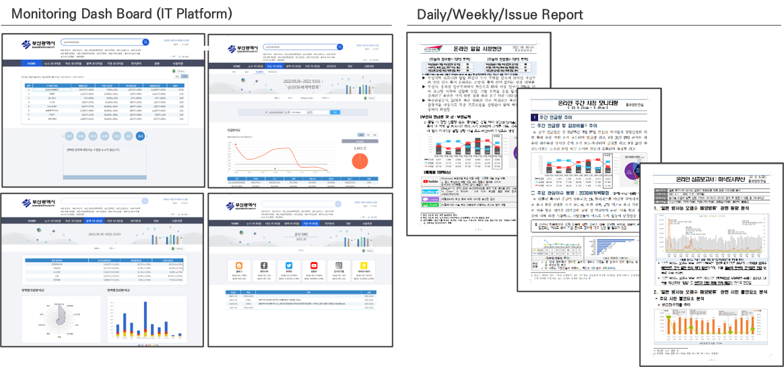
| 목적 | 성남시 정책 및 관련 이슈에 대한 소셜 데이터를 실시간으로 수집·분석하여 시민 여론 동향 파악 및 위기 대응 체계 구축 |
| 배경 | 성남시 정책 및 성남시장 관련 이슈에 대한 시민 반응을 상시 모니터링하고, 산업 활성화 등 주요 정책에 대한 여론 분석 필요 |
| 사용 데이터 | SNS 소셜 데이터 (뉴스, 커뮤니티, 블로그, 트위터 등) — 상시 수집 |
| 사용 도구 | Excel (데이터 정리 및 수치 분석) · PowerPoint (분석 결과 시각화 및 보고서 제작) · 코난테크놀로지의 소셜 데이터 분석 내부 툴 (데이터 수집, 키워드 추출 및 분석) |
| 시스템 기획 | 데이터 수집 범위 설정, 키워드 분류 사전 구축 및 분석 세부 항목 수립, UI 설계 및 고객사 커뮤니케이션 진행, 정기 디버깅 및 시스템 개선 사항 수립 |
| 시스템 주요 기능 | 뉴스 / 이슈 / 정책별 / 브랜드별 모니터링 — 언급량, 긍·부정률, 미래 흐름 분석 등 |
| 위기 얼랏 | SNS 및 언론 보도에서 특정 키워드가 특정 기준 이상 높게 나타나거나, 특정 패턴을 띄며 나타날 경우 텔레그램 알림 발송 — 실시간 대응 체계 강화 및 시스템 고도화 |
| 분석 보고서 | 성남시 정책 및 성남시장 관련 이슈에 대한 시민 여론 분석, 성남시 산업 활성화 등에 대한 여론 반응 분석 등 (Daily / Weekly / Issue Report) |
| 역할(Role) | Research Proposal Writing · Analysis Frame Design · Data Cleaning · Data Analysis · Analysis Report Writing · Presentation |
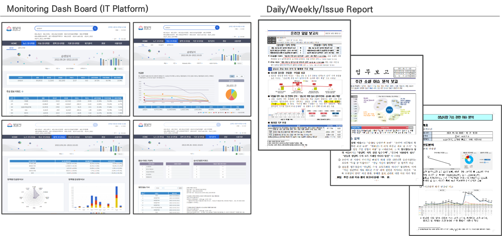
🏆 NIA 빅데이터 활용 우수사례 선정 (2020) — 소셜 분석 기반 신제품 전략 → 실제 매출 성과 달성
→ 광고 대행사에서 마케팅 전략을 담당하다가, IT 회사에서 처음으로 데이터 분석 시스템 화면을 직접 설계하고 개발팀과 협업한 시점. 서비스 기획으로의 관심이 본격화된 계기였습니다.
자사 경쟁력 강화를 위해 개발한 SNS 빅데이터 분석 프레임. 클릭하면 개요를 확인할 수 있습니다.
목적: 소비자 심층 데이터를 기반으로 제품의 속성과 관련된 소비자 가치를 체계적으로 분석해 마케팅 전략에 활용할 텍사노미 사전을 구축.
주요 전제: 레더링(Laddering) 기법으로 구매 행동을 속성(Attribute) → 혜택/결과(Consequence) → 가치(Value)로 계층 연결해 심층 분석. 속성이 제공하는 이점과 심리적·정서적 만족을 도출해 핵심 동기를 파악.
구축 방법: ① 속성 — 제품 고유의 물리적·기능적 특징 텍스트(예: 무설탕 음료) / ② 혜택·결과 — 소비자에게 제공하는 직·간접 이익 텍스트(예: 다이어트에 도움) / ③ 가치 — 최종 심리적·개인적 만족 텍스트(예: 자신감 있는 삶).
기대효과: 속성에서 가치로 이어지는 구조적 분석으로 소비자 내면의 욕구·동기를 파악하고 브랜드-소비자 간 정서적 유대감을 형성. 가치까지 연결되는 통찰로 정교한 마케팅·제품 개발 전략을 도출.
목적: 브랜드를 중심성(시장 대표성)과 차별성(고유 특성)으로 평가해 포지셔닝과 전략을 수립.
주요 전제: 브랜드는 중심성과 차별성을 동시에 추구하며, C-D 맵은 매출·가격 등 사업 성과와 직접 연결되는 도구 (하버드비즈니스리뷰, 니라지 다와 교수).
분석 방법: 중심성(X축) — 자사 브랜드 화제어 Top100이 전체 브랜드 화제어 Top100에 포함되는 비율(시장 대표성). 차별성(Y축) — 전체 대비 자사에서만 나타나는 고유 화제어 Top100 개수 비율(경쟁사 대비 차별화).
4분면 해석: ① 열망 브랜드(중심성 高·차별성 高, 예: 벤츠·BMW) / ② 이례적 브랜드(중심성 低·차별성 高, 예: 테슬라·미니) / ③ 주변 브랜드(중심성 低·차별성 低, 예: 미쓰비시·마쓰다) / ④ 주류 브랜드(중심성 高·차별성 低, 예: 포드·쉐보레).
기대효과: 시장 내 위치를 파악하고 경쟁사 대비 전략적 강점·개선 방향을 도출해 브랜드 전략(광고·커뮤니케이션·포지셔닝)을 수립.
기업·정부·공공기관 대상 소셜 빅데이터 분석 프로젝트. 클릭하면 상세 내용을 확인할 수 있습니다.
| 목적 | 소셜 빅데이터를 활용하여 국민 여론을 분석하고, 2019년 기획재정부 주요 정책 분야에 대한 국민의 관심과 부정적 인식을 기반으로 정책 개선 방향을 제안 |
| 배경 | 일자리 창출, 사회안전망 확충, 경제활력 제고 등 국민 생활과 밀접한 정책에 대한 국민의 의견을 반영하여 정책의 효과성과 신뢰도를 향상시키고자 함 |
| 사용 데이터 | 소셜 데이터 — 뉴스·블로그·카페 약 357,770건 (2018년 1월~12월) / 주요 키워드: 일자리, 사회안전망, 경제활력, 최저임금, 소득주도성장 등 |
| 사용 도구 | Excel (데이터 정리 및 수치 분석) · PowerPoint (분석 결과 시각화 및 발표 자료 제작) · ㈜와이즈넛 분석 솔루션 (데이터 수집, 키워드 추출 및 분석) |
| 분석 결과 ① | 분석을 위해 키워드 분류 체계를 먼저 수립 (대분류, 중분류, 소분류 별 키워드 셋팅). 정책분야별 '본문수'와 '댓글수'를 비교해, 본문수 대비 댓글수가 많은 '일자리 창출', '사회안전망 확충', '삶의 질 개선' 항목을 '관심 집중 분야'로 분류 |
| 분석 결과 ② | 주요 정책 분야별 관심도 및 부정률 매트릭스 분석 결과, 전체 7가지 정책정책 중 '최우선 관리 필요한 분야'는 '일자리창출', '삶의 질 개선'으로 도출 |
| 분석 결과 ③ | '일자리 창출' 분야의 상세 키워드인 세부 관심 키워드 및 부정 키워드 등을 도출하여 '일자리, 취업, 최저임금에 대해 우선적 검토 필요' 하다는 제언 등을 도출 |
| 활용 | '기획재정부 2019 주요 과제' 부총리 보고에 반영 |
| 역할(Role) | Research Proposal Writing · Analysis Frame Design · Data Cleaning · Data Analysis · Analysis Report Writing · Presentation |
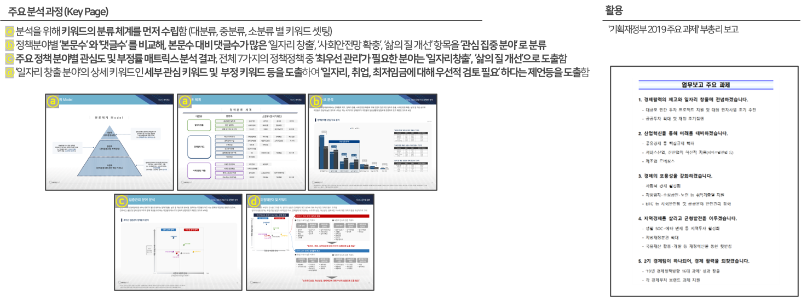
| 목적 | 소셜 빅데이터를 활용하여 다이슨 무선청소기의 시장 경쟁력을 분석하고, 소비자 요구에 부합하는 개선 방향을 제안 |
| 배경 | 무선 청소기 시장에서 강력한 프리미엄 이미지를 형성한 다이슨. 하지만 최근 삼성, LG와 같은 경쟁 브랜드의 기술 발전과 마케팅 강화로 인해 소비자들의 관심이 분산되고 있는 상황 |
| 사용 데이터 | SNS 비정형 텍스트 데이터 약 61,893건 (네이버 블로그, 다음블로그, 네이버 커뮤니티 등), 검색데이터 / 주요 키워드: 다이슨, LG무선청소기, 삼성무선청소기 |
| 사용 도구 | Excel (데이터 정리 및 수치 분석) · PowerPoint (분석 결과 시각화 및 발표 자료 제작) · 와이즈넛의 소셜 데이터 분석 내부 툴 (데이터 수집, 키워드 추출 및 분석) |
| 분석 결과 ① | 3사 모두 상향 평준화된 '흡입력', 앞으로 새롭게 떠오르는 '무게' — 무선 청소기 관련 이슈 내 흡입력 이슈 감소, 무게에 대한 이슈는 점차 증가. 경쟁사별 비교 시 무게에 대한 호감도는 다이슨이 가장 높게 나타남 |
| 분석 결과 ② | 소비자 관심이 가장 높은 제품 구성품은 '스탠드형' 거치대 (고정형은 NO!) — 제품 구성 중 스탠드형 거치대에 대해 가장 높은 관심을 보였으나, 자사는 스탠드형 거치대가 없어 거치대를 따로 구매하는 불편을 호소 |
| 분석 결과 ③ | 타사 대비 가장 부족한 제품력은 '배터리 지속력' — 3사(다이슨, LG, 삼성) 구매 요소별 호감도 비교 시, 자사의 열위 요소는 '배터리 지속력' |
| 분석 결과 ④ | 구매이탈요인으로 작용하는 다이슨의 A/S 서비스 — 장기간 사용하는 상품 특성 상, A/S 고려도가 높으나 자사의 경우 국내 A/S 센터가 없으며, 이는 구매 이탈 요인으로 작용 |
| 활용 | '가벼운 무게'를 소구한 광고 집행 / '고정형 스탠드형 거치대' 제공 / '신규 모델 배터리 지속력 개선' / '직영 A/S 센터 오픈 (+72시간 내 수리 서비스)' |
| 역할(Role) | Research Proposal Writing · Analysis Frame Design · Data Cleaning · Data Analysis · Analysis Report Writing · Presentation |
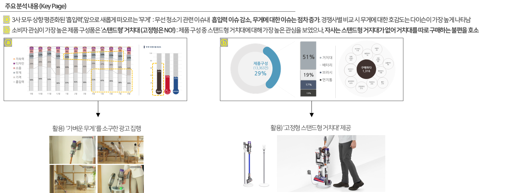
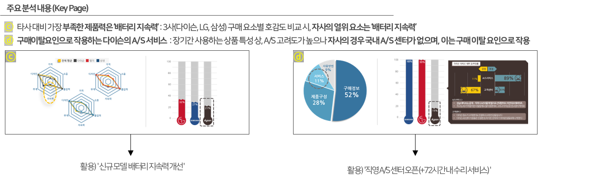
| 목적 | 면역력 관련 신제품 기획을 위한 소비자 행동과 트렌드 도출, 시장의 요구를 반영한 제품 개발 방향성 제시 |
| 배경 | 건강기능식품 시장에서 면역력 강화 제품의 성장세를 반영해 자사 제품 경쟁력 강화를 목표로 함 |
| 사용 데이터 | SNS 비정형 텍스트 데이터 약 128만 건 (네이버 블로그, 네이버 카페, 트위터 등) / 주요 키워드: 면역력 |
| 사용 도구 | Excel (데이터 정리 및 수치 분석) · PowerPoint (분석 결과 시각화 및 발표 자료 제작) · 와이즈넛의 소셜 데이터 분석 내부 툴 (데이터 수집, 키워드 추출 및 분석) |
| 분석 결과 ① | 면역력 관련 데이터는 '증상/원인', 'KBF', 'TPO', '광고/프로모션'으로 분류할 수 있으며, 언급량 비중은 증상/원인 > KBF > TPO > 광고/프로모션 순으로 나타남 (*'증상/원인' 분석 결과는 광고 시 소구 포인트로 별도 제안됨) |
| 분석 결과 ② | KBF에서는 '성분/원료'에 대한 관심이 가장 높았고, TPO에서는 '동반 인물' 관련 언급이 가장 두드러짐 |
| 분석 결과 ③ | 면역기능식품 TPO 상세 분석 결과, 동반 인물에 대한 언급이 전체의 절반이상을 차지했으며, 동반 인물 언급은 지속 상승해 '인물'에 대한 고려도가 점차 높아지고 있음을 확인 |
| 분석 결과 ④ | 면역기능 식품은 특히 '자녀'를 위한 구매가 많이 언급되는 편이나, 이롬은 타 브랜드 대비 언급이 낮은 수준. 최근 면역관련 언급순위가 급증하는 원재료는 '도라지', 제형 '스틱/파우치' |
| 활용 | 파우치형 '키즈10' 신제품 출시 (도라지 기반 EHF-365 농축액 함유) |
| 역할(Role) | Research Proposal Writing · Analysis Frame Design · Data Cleaning · Data Analysis · Analysis Report Writing · Presentation |
.png)
.png)
| 목적 | 생식 관련 소셜 빅데이터 분석을 통해 이롬플러스의 신제품 기획 방향성을 도출하고 소비자 니즈를 반영한 제품 개발에 기여 |
| 배경 | 생식 시장은 웰빙 트렌드와 간편한 건강식에 대한 소비자 요구 증가로 새로운 제품 개발이 필요한 상황 |
| 사용 데이터 | SNS 비정형 텍스트 데이터 약 10만 건 (네이버 블로그, 네이버 카페, 트위터 등) / 주요 키워드: 생식 |
| 사용 도구 | Excel (데이터 정리 및 수치 분석) · PowerPoint (분석 결과 시각화 및 발표 자료 제작) · 와이즈넛의 소셜 데이터 분석 내부 툴 (데이터 수집, 키워드 추출 및 분석) |
| 분석 결과 ① | 분석에 앞서 '기대 가치 체계별 항목 정의'를 선행적으로 분류함 — 사회적 가치(Social Value) / 생활적 가치(Life Value) / 감성적 가치(Emotional Value) / 기능적 가치(Functional Value)의 4단계 가치 체계별 항목을 키워드 기준별로 분류 셋팅한 후 '생식'과 관련된 SNS 온라인 소셜 데이터를 분석함 |
| 분석 결과 ② | 기대가치 체계별 항목 기준으로 '생식' 관련 연관어를 분류할 시, '생식'과 관련된 내용이 과거엔 단순 '기능적 가치'가 주로 언급됐던 반면, 최근 '생식'과 관련해 '생활적/사회적 가치'의 언급이 증가함 — 제품 자체의 기능·품질 이상으로 생식 제품 소비를 통해 소비자가 추구하는 삶을 실현하려는 욕구가 나타나는 것으로 해석 |
| 분석 결과 ③ | 특히, 기대가치 체계의 세부 항목 중 가장 많이 언급된 '웰니스', 그 중에서도 '다이어트'에 대한 기대 지속 상승 |
| 결론 | 분석결과를 종합하여 이롬플러스의 제품 기획 방향을 제안함. 이롬플러스의 현재 제품 Coverage를 고려하여, 이롬플러스가 대응하지 못하는 '다이어트'용 제품의 기획방향을 수립했으며, 각종 상세 분석 결과를 종합하여 '다이어트' 제품의 상세타겟, 주성분, 보완식품, 가격정책 등의 마케팅 요소를 상세히 제안함 |
| 활용 | '셀푸드 뷰티생식 24' 신제품 출시 (뷰티&다이어트 강조, 제품 패키지 디자인 강화) |
| 역할(Role) | Research Proposal Writing · Analysis Frame Design · Data Cleaning · Data Analysis · Analysis Report Writing · Presentation |
.png)
.png)
| 목적 | 한샘의 광고 캠페인 '나는 엄마입니다' 시리즈를 중심으로 SNS 빅데이터를 분석해 광고 효과를 평가하고 소비자 인식 변화를 파악하여, 향후 커뮤니케이션 방향성을 도출 |
| 배경 | 한샘 성파문 사건 이후 브랜드 이미지가 크게 타격을 입었으며, 이를 극복하고 소비자 신뢰를 회복하기 위해 감성적 공감 캠페인 '나는 엄마입니다'를 런칭 |
| 사용 데이터 | 소셜 데이터 — 뉴스, 블로그, 카페 약 5,857건 (총 4주) / 주요 키워드: 한샘 |
| 사용 도구 | Excel (데이터 정리 및 수치 분석) · PowerPoint (분석 결과 시각화 및 발표 자료 제작) · ㈜와이즈넛 D-MAP 분석 솔루션 (데이터 수집, 키워드 추출 및 분석) |
| 분석 결과 ① | 한샘 성파문 사건 이후, 빠르게 확산되는 불매운동 — 신규 사건 보도 3일 후 반응 정점을 보이는 패턴 |
| 분석 결과 ② | 미혼모 뿐 아닌, 워킹맘&일반맘까지 공감을 보인 1차 캠페인 — 감동적 캠페인 영상으로 미혼모 응원 캠페인을 시작하여 폭넓은 공감 형성 |
| 활용 | '나는 엄마입니다 미혼모 편' (1차 캠페인) · '나는 엄마입니다 워킹맘 편' (2차 캠페인) 전개 |
| 역할(Role) | Research Proposal Writing · Analysis Frame Design · Data Cleaning · Data Analysis · Analysis Report Writing · Presentation |
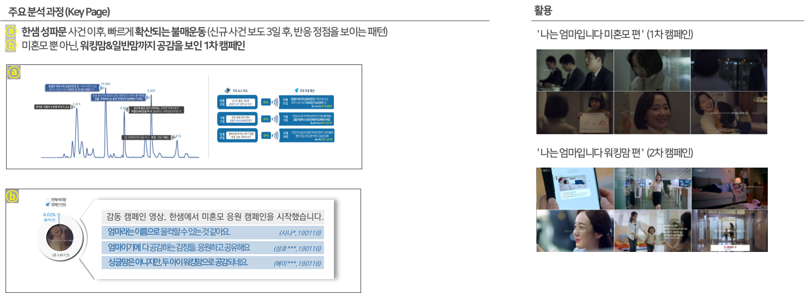
| 목적 | SNS 빅데이터를 활용해 FILA 브랜드의 소비자 인식과 경쟁 구도를 분석하여, 마케팅 및 광고 전략 수립에 기여 |
| 배경 | FILA는 20대 중심의 주요 소비자층을 보유하며, 특히 뉴발란스, 퓨마 등 경쟁 브랜드와의 차별화 및 시장 내 포지셔닝 강화를 목표로 함 |
| 사용 데이터 | 검색 데이터, 소셜 게시 데이터 — 네이버 다음 블로그 및 카페 약 4만 건 / 주요 키워드: 필라, 뉴발란스, 퓨마, 데상트, 르꼬르, 리복 등 |
| 사용 도구 | Excel (데이터 정리 및 수치 분석) · PowerPoint (분석 결과 시각화 및 발표 자료 제작) · ㈜와이즈넛 D-MAP 분석 솔루션 (데이터 수집, 키워드 추출 및 분석) |
| 분석 결과 ① | 주요 경쟁 브랜드 분석 — 검색량으로 살펴본 주요 경쟁 브랜드는 뉴발란스, 퓨마, 데상트 등 |
| 분석 결과 ② | 소비자 연령 및 성별 분석 — 검색량 확인시 FILA의 주요 소비자층은 20대 여성이며, 10대 소비자의 검색 비중이 점차 증가. 또한 경쟁사와 비교 했을시에도 '20세 여자' 타겟을 대상으로 강점이 존재 |
| 분석 결과 ③ | 광고 및 프로모션 효과 분석 — 연말 직전 12월 3주차에 '구매'에 대한 언급 비중이 들어났으며, 12월 2주차는 '광고' 언급 비중 상승 |
| 분석 결과 ④ | 광고와 관련된 언급 분류 내에서는 '가격 프로모션 > 모델(김유정) > 콜라보 > PPL' 순으로 효과가 높게 나타남 |
| 결론 | FILA의 차별화를 위해 여성 소비자 및 10대 소비자를 타겟으로 하는 신규 라인업과, 연말 시즌에 맞춘 가격 중심의 프로모션 확대 제안 |
| 활용 | 10대 타겟 신규 라인업 출시 — 휠라, 신학기 맞아 투웨이 스타일 백팩 '링크 맥스·링크 플러스' 백팩 출시 |
| 역할(Role) | Research Proposal Writing · Analysis Frame Design · Data Cleaning · Data Analysis · Analysis Report Writing · Presentation |
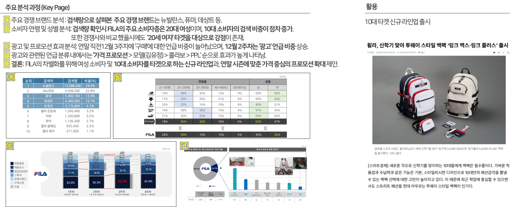
| 목적 | 대형 SUV 시장의 주요 차종(모하비, G4 렉스턴, 포드 익스플로러)에 대한 소비자 인식 및 경쟁 구도를 파악하고, 향후 커뮤니케이션 전략 수립에 필요한 방향성을 도출 |
| 배경 | 대형 SUV 시장에서 공간 효율성과 안전성이 주요 선택 요인으로 부각되며, 각 차종별 특성 및 경쟁 요소를 분석할필요성이 제기됨 |
| 사용 데이터 | 네이버 검색 데이터 (7,290만 건), 동호회, 커뮤니티, 블로그 게시 데이터 (5만 건) |
| 사용 도구 | Excel (데이터 정리 및 수치 분석) · PowerPoint (분석 결과 시각화 및 발표 자료 제작) · ㈜와이즈넛 D-MAP 분석 솔루션 (데이터 수집, 키워드 추출 및 분석) |
| 분석 결과 ① | 차종별 주요 타겟 라이프 스타일 비교 — 대형 SUV 카테고리 전체에 대한 소비자 인식은 '공간 효율성과 안전성'을 중시하는 가족 지향형으로 나타났으며, 3가지 차종별 타깃 특성이 상이하게 나타남. 익스플로러: '옵션 중시형' / G4 렉스턴: '경제성 중시형' / 모하비: 주행성능을 중시하는 '자기 만족형' |
| 분석 결과 ② | 안전성 관련 부정 지수 분석 결과 — 익스플로러 및 렉스턴은 '안전'에 관한 부정 지수가 타 차종에 비해 상대적으로 높게 나타난 반면, 기아 모하비는 안전성 부정 지수가 가장 낮음을 확인 |
| 결론 | SUV의 기본 속성인 '안전'을 강조하며, '사고 발생 시 가족을 보호할 수 있는 차량'이라는 이미지를 강화하는 공격적 커뮤니케이션 전략 수립 필요. 또한, 모하비만의 차별화된 USP인 '주행 성능'을 부각시켜 경쟁사 대비 차별화된 메시지를 전달할 것을 제안 |
| 역할(Role) | Research Proposal Writing · Analysis Frame Design · Data Cleaning · Data Analysis · Analysis Report Writing · Presentation |
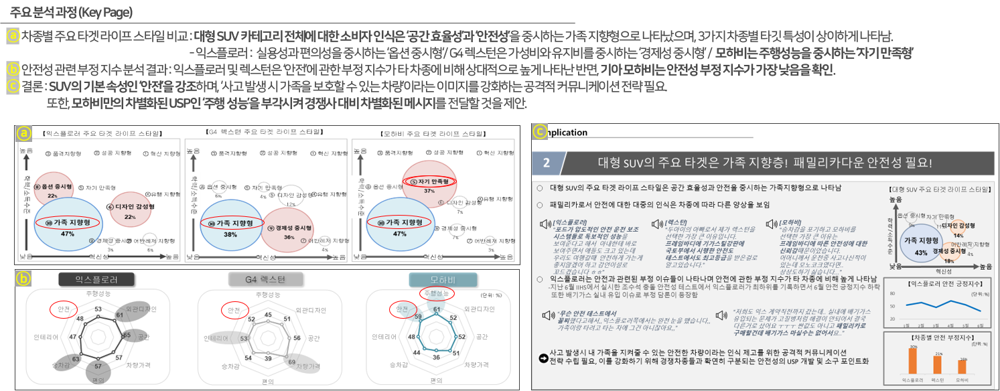
| 목적 | 현대자동차 및 제네시스 브랜드의 온라인 여론을 분석하여 긍부정 요인을 파악하고, 향후 커뮤니케이션 및 마케팅 전략 수립에 필요한 인사이트를 도출 |
| 배경 | BMW의 '화재' 부정 이슈가 발생하면서, 이로 인해 현대자동차와 제네시스의 브랜드 이미지와 경쟁력에 미친 영향을 평가해야 하는 상황 |
| 사용 데이터 | 네이버 검색 데이터(3,000만 건) + 동호회·커뮤니티·블로그 게시 데이터(100만 건) |
| 사용 도구 | Excel (데이터 정리 및 수치 분석) · PowerPoint (분석 결과 시각화 및 발표 자료 제작) · ㈜와이즈넛 D-MAP 분석 솔루션 (데이터 수집, 키워드 추출 및 분석) |
| 분석 결과 ① | BMW 화재 이슈 이후 현대자동차와 제네시스는 긍정 여론이 증가했으나, 일부 화재 관련 부정적 연관 언급도 확인됨 |
| 분석 결과 ② | BMW 화재 이슈로 G80은 외산차와의 경쟁보다는 국산차(K9, 스팅어)와의 경쟁이 심화되는 양상이 나타남 |
| 분석 결과 ③ | 화재 이슈 전후 상품성 비교 시, 긍정지수는 전반적으로 증가했으나 BMW 화재 이슈에 따른 직접적 반사이익은 아닌 것으로 분석됨 — 인식 변경으로 인한 기대와 관심에 의한 결과로 해석 |
| 결론 | 분석 결과 종합 시, BMW 화재 이슈로 인한 반사이익은 타 외산 브랜드가 수혜를 받는 것으로 분석되며, 당사는 부정이슈 전이를 시뮬레이션해야 하고, 초기 선제적 대응안을 구성하는 긴급 조치 매뉴얼이 필요 |
| 활용 | 현대자동차 제네시스 브랜드 커뮤니케이션 전략 수립 및 위기 대응 매뉴얼 구성에 반영 |
| 역할(Role) | Research Proposal Writing · Analysis Frame Design · Data Cleaning · Data Analysis · Analysis Report Writing · Presentation |
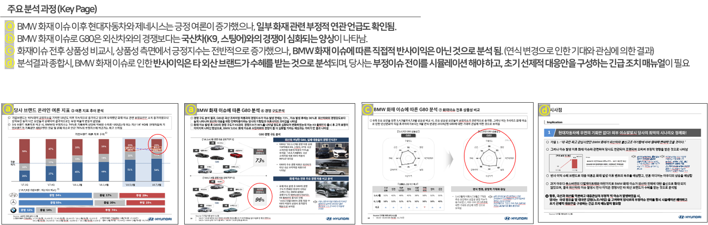
→ 코마코에서의 광고 기획 경험을 IT 데이터 분석 환경으로 처음 확장한 시점. 정성적 소비자 인사이트를 데이터로 검증하는 방법론을 체계적으로 습득했으며, 이후 코난테크놀로지에서 분석 시스템을 기획하는 기반이 됨.
소셜 빅데이터 기반 마케팅 인사이트 도출 방법론 — 고객사 제안 경쟁력 강화를 위해 자체 개발. 클릭하면 개요를 확인할 수 있습니다.
목적: 연관어 변화로 산업별 트렌드 변화 속도를 측정하여 마케팅 전략과 신제품 출시 주기 최적화.
방법: 소셜 데이터에서 카테고리 대표 키워드의 연관어 변화를 추적, 시간별 변화량을 0~100 지수로 수치화.
목적: 초기 수용자(FG)와 후기 다수자(SG)로 그룹화하여 향후 시장 트렌드 예측.
방법: FG(전문 커뮤니티·뉴스)와 SG(SNS 전반)의 버즈 생성 패턴을 2×2 매트릭스로 분석 — 잠재/성장/포화/소멸 트렌드 4분면 진단.
목적: 카테고리 전체와 주요 브랜드의 연관어 비교를 통해 브랜드별 강·약점 및 차별점 파악.
방법: 연관어 순위 비교로 6개 Zone 분류 — Green(핫 트렌드) / Blue(브랜드 우위) / Red(브랜드 열위) / Yellow(취약 연관어) / Purple(차별 연관어) / White.
목적: 5개년간 상위 50위 핵심 연관어(CL)의 연평균 순위를 1~100점으로 지수화, 중요도를 객관적으로 평가.
방법: 연도별 데이터 볼륨 차이를 보정하여 동일 기준 비교 → 단기 노이즈 제거, 장기적 중요도와 일관성 반영.
목적: 중분류 연관어 수 증감률(X축)과 CL-Value 증감률(Y축) 교차 분석으로 향후 트렌드 경향성 예측.
방법: 잠재/집중/확산/분산 4분면으로 카테고리 성장 가능성 진단.
목적: 카테고리 브랜드들의 3개년 연평균 버즈량(Size)과 증감률(Change)로 브랜드 상대적 활성화 수준 비교.
방법: Size Buzz Norm × Change Buzz Norm 교차 분석 → 잠재/주목/유망/관망 4분면으로 포지셔닝 진단.
목적: 카테고리 내 브랜드 상대적 위치 진단 및 전략적 실행 방안 도출.
방법: Size/Change Buzz Norm을 기준으로 분면을 나눠 브랜드 버즈 활성화 수준 체계적 진단 → 잠재/주목/유망/관망 시각화.
클릭하면 상세 내용을 확인할 수 있습니다.
| 목적 | 맘스터치 신사업(붐바타 – 화덕피자 브랜드)의 시장 가능성과 소비자 요구를 분석하여 매장 내 신규 상품 확장 방향 제시 |
| 배경 | 화덕피자는 기존 피자 시장에서 프리미엄 카테고리로 자리잡으며, 소비자의 점심·간편식 선호 증가 트렌드 형성 |
| 사용 데이터 | SNS 소셜 데이터 약 1,000만건 / 주요 키워드: 화덕, 피자, 화덕피자, 붐바타, 서브웨이 |
| 사용 도구 | Excel · PowerPoint · ㈜와이즈넛 D-MAP 분석 솔루션 |
핵심 분석 결과
| T.P.O 분석 ① | 화덕피자는 '점심'과 '간편식' 상황에서 높은 선호도 · 일반 피자는 '저녁'과 조합이 높게 나타남 |
| T.P.O 분석 ② | 화덕피자는 보완재로 '샐러드'와의 조합이 강하게 나타남 · 일반 피자는 '치킨'과 조합 높음 |
| 결론 및 제안 | 점심 시장 확장을 위해 건강한 이미지 강조 신규 제품 라인 + 프리미엄 브랜드 포지셔닝 전략 제안 / 화덕피자 외 점심용 '샌드위치 중심 라인' 추가 / 화덕피자와 곁들일 '샐러드' 제품 다양화 |
| 목적 | 백수오궁 광고 캠페인 효과 분석 — 광고의 기대 효과와 실질적 영향을 정량·정성적으로 평가 |
| 배경 | 백수오궁의 광고 캠페인이 진행되었으며, 갱년기 건강 시장에서의 광고 효과를 데이터 기반으로 검증할 필요 |
| 사용 데이터 | SNS 소셜 데이터 약 11만건 / 갱년기 전반 관련 Buzz 11만건 · 백수오 포함 Buzz 1천건 · 백수오 효능 및 안정성 관련 Buzz 8백건 |
| 사용 도구 | Excel · PowerPoint · 다음소프트 소셜매트릭스 |
| 분석 결과 ① | 광고 진행 중 백수오 효능/안정성 관련 버즈 96.9% 증가 (광고 전 194건 → 광고 중 382건) |
| 분석 결과 ② | 백수오 효능과 안정성에 대한 '신뢰' 평판이 광고 후 92% 증가, 광고 종료 후에도 88% 수준 유지 |
| 결론 | 광고가 백수오의 효능과 안정성에 대한 신뢰 제고에 기여했음을 데이터로 입증 |
| 결과물 | '서양승마' 컨셉의 TVCF 제작에 반영 |
| 역할(Role) | Research Proposal Writing · Analysis Frame Design · Data Cleaning · Data Analysis · Analysis Report Writing · Presentation |
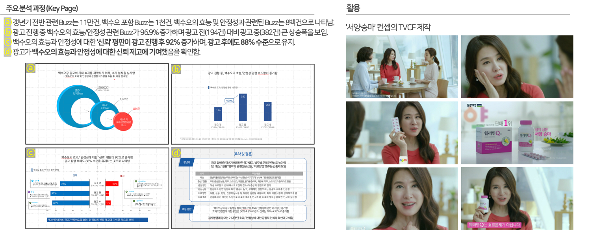
| 목적 | 숙면 관련 소비자 데이터를 분석하여 슬립앤슬립(S&S)의 브랜드 이미지 차별화와 매력도 제고를 위한 방안 마련 |
| 배경 | 숙면과 불면증에 대한 사회적 관심이 증가하는 가운데, 침구 시장에서 소비자 니즈에 맞춘 제품과 차별화된 마케팅 전략이 필요한 상황 |
| 사용 데이터 | SNS 소셜 데이터 약 70만건 / 주요 키워드: 슬립앤슬립, 이브자리, 알레르망, 숙면, 불면증 |
| 사용 도구 | Excel · PowerPoint · 다음소프트 소셜매트릭스 |
| 분석 결과 ① | 3개년 숙면 관련 버즈량 증가 추이 확인 — 숙면에 대한 소비자 관심 지속 성장 |
| 분석 결과 ② | S&S의 차별적 USP → '체형'·'건강한'·'도움되다' / 이브자리 → '편안한' / 알레르망 → '부드러운' |
| 결론 | '체형과 건강'을 중심으로 소비자와의 연관성을 강화하여 브랜드 매력도를 높이는 방향 제안 |
| 결과물 | '자면서 건강해지세요, 숙면타퍼 G2' 카피 반영 |
| 역할(Role) | Research Proposal Writing · Analysis Frame Design · Data Cleaning · Data Analysis · Analysis Report Writing · Presentation |
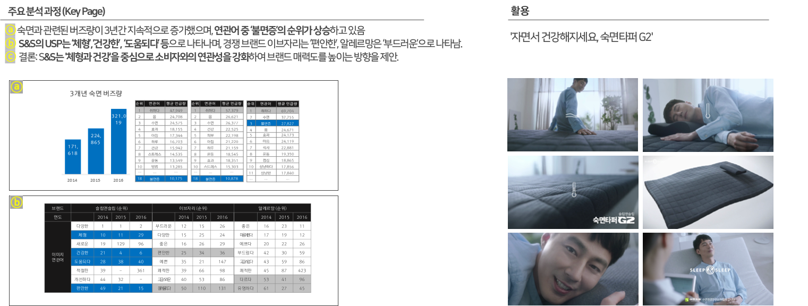
| 목적 | 소비자 데이터를 분석하여 라면 시장의 최신 트렌드를 파악하고 제품 기획 및 마케팅 방향성을 제시 |
| 배경 | 라면 시장 내 경쟁이 심화되는 가운데, 소비자 니즈 변화에 기반한 데이터 기반 제품·마케팅 전략 수립 필요 |
| 사용 데이터 | SNS 소셜 데이터 약 100만건 / 주요 키워드: 라면, 왕뚜껑 |
| 사용 도구 | Excel · PowerPoint · 다음소프트 소셜매트릭스 |
| 분석 결과 ① | '라면' 연관어 분류 중 '속성/사리' 비중이 최근 높게 증가 — 사리면에 대한 소비자 관심 증가 포착 |
| 분석 결과 ② | 왕뚜껑의 차별적 USP → '면(쫄깃한 면발)'과 '광고·모델' |
| 결과물 | '탕종분' 강화 버전 봉지 왕뚜껑 출시 + 이슈 컨텐츠와 모델을 활용한 TVCF 집행 (기생충·스카이캐슬 패러디) |
| 역할(Role) | Research Proposal Writing · Analysis Frame Design · Data Cleaning · Data Analysis · Analysis Report Writing · Presentation |
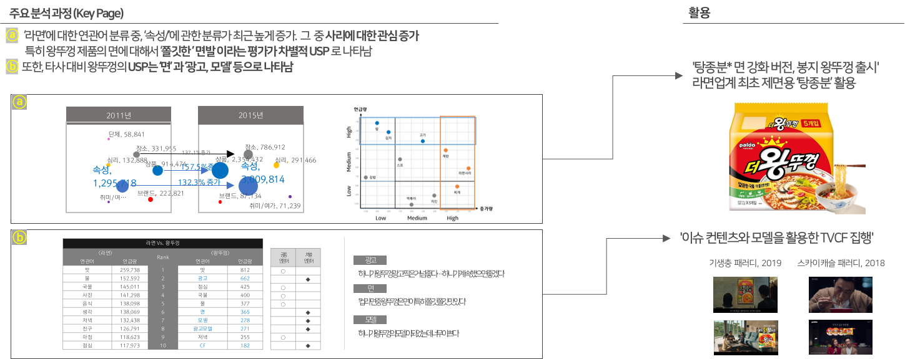
| 목적 | 광고 효과 조사를 통해 브랜드 인지와 호감도를 높이고, 첨단기술 및 기업 비전을 소비자에게 효과적으로 전달하기 위한 차기 광고 제작 준비 |
| 배경 | 4차 산업 기술력과 미래 비전을 강조한 TVCF를 집행, 소비자 반응을 정량적으로 평가하여 후속 전략 수립 필요 |
| 사용 데이터 | 소비자 조사 데이터 — TVCF 평가 및 온라인 설문 |
| 사용 도구 | Excel · PowerPoint · 온라인 서베이 플랫폼 |
| 분석 결과 ① | 광고 시청 전후 브랜드 호감도 43.2% → 66.0% (22.8%p↑) / 19년도 기업 PR 광고 중 평가 2위 |
| 분석 결과 ② | 광고 만족도 5.4점 (업계 평균 4.8점) |
| 긍정 요소 | 첨단 기술력·미래지향적 비전·광고 연출에 대한 소비자 긍정 반응 |
| 보완 요소 | 전문 용어가 어렵다는 의견 / 현재 적용 사례 부족 지적 |
| 결과물 | '전에 없던 세상이 함께 타고 있다' TVCF 제작 |
| 역할(Role) | Research Proposal Writing · Analysis Frame Design · Data Analysis · Presentation |
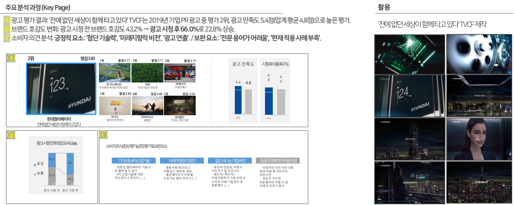
| 목적 | 헬리코박터 프로젝트 윌 TV 광고 캠페인의 소비자 반응 및 광고 효과를 정량·정성적으로 평가 |
| 배경 | 헬리코박터 프로젝트 윌의 광고 캠페인이 진행되었으며, 캠페인 전후 소비자 인식 변화를 데이터로 검증할 필요 |
| 사용 데이터 | SNS 소셜 데이터 약 2,000건 / 주요 키워드: 헬리코박터 프로젝트 윌, 윌+α |
| 사용 도구 | Excel · PowerPoint · 다음소프트 소셜매트릭스 |
| 분석 결과 ① | 캠페인 이전 대비 버즈량 101% 증가 / 17년 긍정율 16년 대비 11%p 상승 |
| 분석 결과 ② | 전년 대비 '저지방'·'블랙커런트' 감소, '유산균'·'위암'·'헬리코박터균' 등 기능성 관련 연관어 증가 |
| 결과물 | 기능성 관련 키워드를 강조한 '윌을 넘어서다' TVCF 제작 |
| 역할(Role) | Research Proposal Writing · Analysis Frame Design · Data Cleaning · Data Analysis · Analysis Report Writing · Presentation |
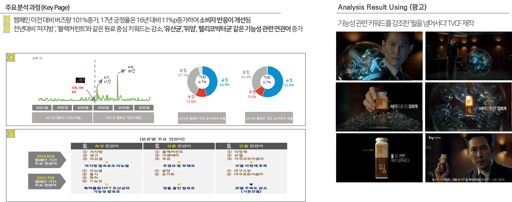
| 목적 | 간 건강 및 피로회복에 관한 소비자의 니즈를 평가하고, 쿠퍼스의 잠재 경쟁 브랜드에 대한 이슈 진단을 통해서, 향후 쿠퍼스의 커뮤니케이션 전략의 방향을 탐색 |
| 배경 | 기능성 음료 시장에서 광고 캠페인이 경쟁사 간 활발히 진행 중 |
| 사용 데이터 | SNS 소셜 데이터 약 100만건 / 주요 키워드: 간건강, 피로회복, 쿠퍼스, 박카스, 비타500, 우루사, 아로나민골드, 헛개컨디션 등 |
| 사용 도구 | Excel · PowerPoint · 다음소프트 소셜매트릭스 분석 솔루션 (데이터 수집, 키워드 추출 및 분석) |
| 분석 결과 | 간 건강 및 피로회복에 대한 니즈 탐색. 다중대응일치분석 결과 쿠퍼스의 경우 타 경쟁 브랜드 대비 '간 건강' 차별적 우위 보유. 박카스·비타500·아로나민골드는 '피로회복'을 중심으로 경쟁하는 양상 |
| Analysis Result Using | 간건강을 강조한 '이 중에 안 힘든 사람 없다' 슬로건 TVCF 제작 |
| 역할(Role) | Research Proposal Writing · Analysis Frame Design · Data Cleaning · Data Analysis · Analysis Report Writing · Presentation |
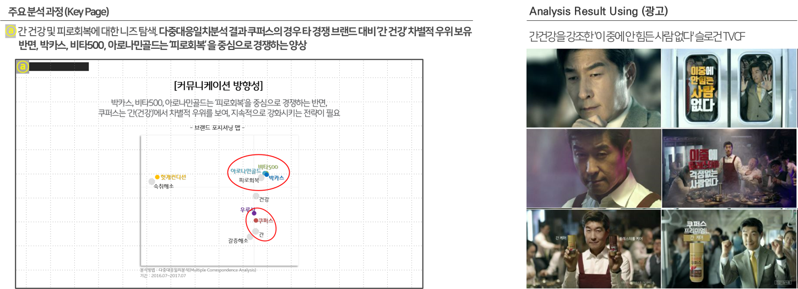
| 목적 | 매입량, 판매량, 재고량 데이터를 분석해 유통 구조를 최적화하고, 광고 효과와의 상관관계를 파악 |
| 배경 | 잇몸약 시장에서 동국제약의 점유율 확대와 효율적 재고 관리를 위해 매월 예측 분석을 통해 유통 전략을 수립 |
| 사용 데이터 | 면접원 방문 후 1:1 개별 면접 및 POS DATA 수집 (층화 비례 표본 추출법, 표본규모: 전국 362개 소매 약국) |
| 사용 도구 | Excel (데이터 정리 및 수치 분석) · PowerPoint (분석 결과 시각화 및 발표 자료 제작) · Nielsen Solution |
| 분석 결과 ① | 판매량, 매입량, 재고량을 중심으로 매월 다음달 매입량을 예측하여 약국 유통 구조 개선 |
| 분석 결과 ② | 광고 이후 상관관계를 분석하여 광고 효과 측정 |
| 역할(Role) | Data Cleaning · Data Analysis · Analysis Report Writing · Presentation |

| 목적 | 소비자 서베이를 통해 V-food 브랜드에 대한 현재 수준을 파악하고, 향후 브랜드 Revitalization에 대한 전략을 파악하고자 조사를 시행한 후 브랜드 방향성을 제안 |
| 사용 데이터 | 소비자 서베이 데이터 (브랜드앤컴퍼니 패널) |
| Key Page | V-Food 브랜드에 대한 브랜드 위상 파악 및 브랜드 방향성 정립 — 브랜드 리포지셔닝 방향에 대한 수용도 평가 · 건강기능식품 소비자 니즈 점유 · 브랜드 위상 · Brand Identity 수립 |
| 역할(Role) | Research Proposal Writing · Analysis Frame Design · Data Analysis · Presentation |
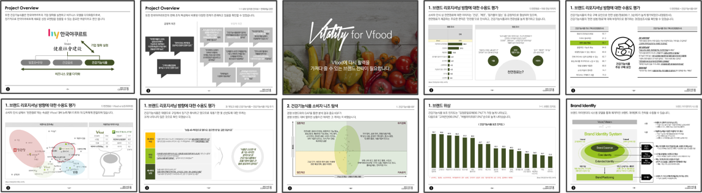
| 목적 | 소비자 서베이 조사 발주를 통해 려 제품 광고 제작을 위한 샴푸 시장을 조사 |
| 사용 데이터 | 소비자 서베이 데이터 (Kantar Korea 패널) |
| Key Page | 려 제품 광고 제작을 위해 샴푸 시장 조사를 시행 — 브랜드 Funnel, 구매 기준, 카테고리별 소비자 니즈 분석 |
| Analysis Result Using | '탈모증상케어, 이제 과학적으로' 광고 제작에 반영 |
| 역할(Role) | Research Proposal Writing · Analysis Frame Design · Data Analysis · Presentation |
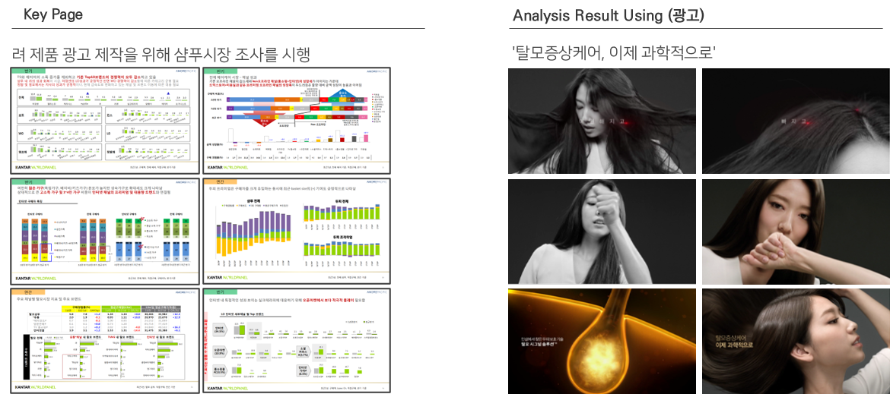
| 목적 | 소비자 서베이를 통해 메리츠화재 브랜드 위상을 진단하고 강화/개선 방안을 도출함과 동시에, 효과적 브랜드 활동 및 커뮤니케이션 운영을 위한 전략 수립 |
| 사용 데이터 | 소비자 서베이 데이터 (Ipsos Connect 패널) |
| Key Page | 메리츠화재 브랜드 위상 진단 및 커뮤니케이션 운영 전략 도출 — M 브랜드 Funnel · 광고 인지도 · 보험에 대한 인식 및 이미지 변화 · 브랜드 자연연상 이미지 분석 |
| Analysis Result Using | '걱정을 혁신하다' 광고 캠페인 반영 |
| 역할(Role) | Research Proposal Writing · Analysis Frame Design · Data Analysis · Presentation |
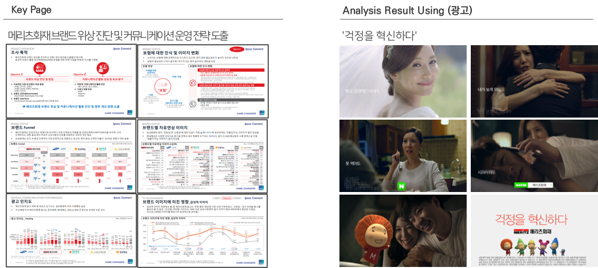
클릭하면 상세 내용을 확인할 수 있습니다.
| 배경 | 3위 브랜드 맘스터치가 1~2위(맥도날드·롯데리아)와 경쟁하기 위한 장기적 브랜드 방향성 필요 |
| 제안 방향 | 타 브랜드 대비 차별적 이미지가 강력하지 않은 소비자 인식 → '수제버거'로의 소구 방향 수립 |
| 브랜드 설계 | Brand Vision '정성 어린 한 끼로 최고의 제품 제공' / Brand Essence '지켜주고 싶은 마음' / Slogan 'Heart is always Here MoM's Touch' / 브랜드 심볼·징글 제작 및 제품 아키텍처 개발 |
| 결과물 | '묵직한 버거' TVCF 반영 |
| 역할(Role) | Branding Strategy · Communication Strategy |
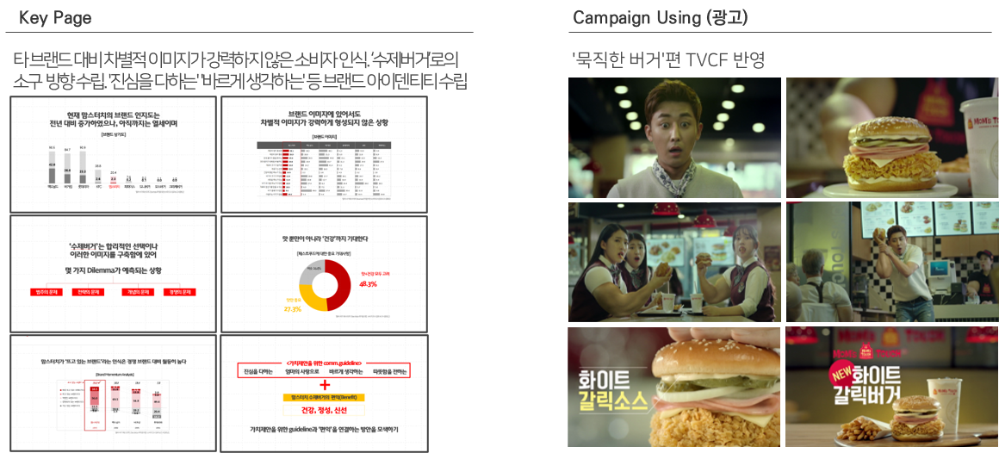
| 배경 | 허가 변경에 따라 포지셔닝 재정립 필요 — 기존 '잇몸 치료제' 이미지에서 전환 요구 |
| 전략 방향 | '잇몸 치료제' → '잇몸 관리제의 잇몸약'으로 이미지 전환 · 보조치료제 명시하면서도 일반의약품 지위 유지 · 안전성 강조로 신뢰도 확보 |
| 결과물 | '잇몸에도 나이가 있습니다. 사랑으로 챙겨보세요' TVCF 반영 |
| 역할(Role) | Branding Strategy · Communication Strategy |
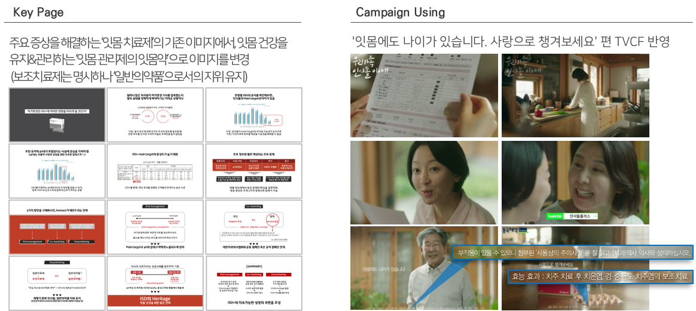
| 배경 | 수협은행은 '은행'으로서의 인식이 저조하며 브랜드 인지도도 낮음 · '어민 전용 은행' 이미지 탈피가 선행 과제 |
| 전략 방향 | 경쟁 은행과의 직접 경쟁보다 '시중은행'으로서의 이미지 확보를 선행 목표로 설정 · '국민 누구나, 전국 어디서나 이용 가능' 메시지 강조 |
| 결과물 | '새로운 은행' TVCF 반영 |
| 역할(Role) | Branding Strategy · Communication Strategy · Contents Idea |
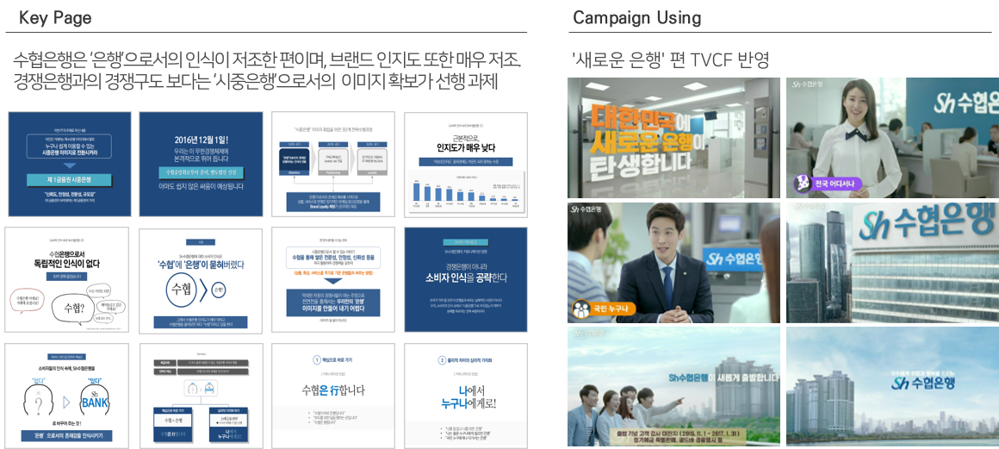
| 배경 | 전통음료 시장 성장 둔화 · 매출 정체 상태 · '건강음료' 컨셉과 단맛 강한 식혜의 인지 부조화 존재 |
| 인사이트 | '전통음료'에 대한 뚜렷한 음용 T.P.O 부족 발견 → 단맛이 필요한 상황(업무 시간·기상 시간·숙취 후)을 광고 소재로 활용해 음용 시점 제시 |
| 결과물 | 팔도×마블 '업무시간'·'기상시간' 편 광고 반영 / '비락 헛개 식혜' 신제품 반영 |
| 역할(Role) | Branding Strategy · Communication Strategy |
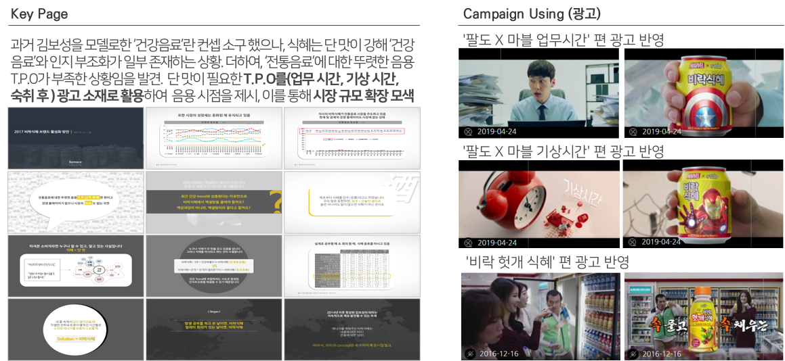
| 배경 | 비국물 라면 시장 경쟁 심화 · 소비자 수요 전환 필요 시점 |
| 전략 방향 | 비빔면 시장 대표성을 넘어 비국물면 카테고리 전반에서 리더십 확립 목표 · 새로운 소비자층 확보 및 시장 전체 성장 전략 |
| 결과물 | '누가 비벼도 맛있다' TVCF 반영 |
| 역할(Role) | Branding Strategy · Communication Strategy · Contents Idea |
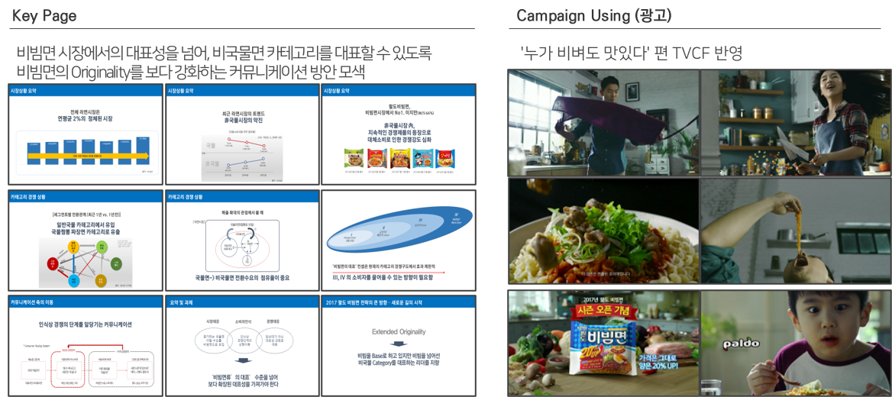
| 배경 | 아웃도어가 점차 단순 운동복 이상의 생활 패션으로의 역할 확장이 됨으로 인해 일반 스포츠 브랜드, 패션 SPA 브랜드와의 경쟁이 펼쳐진 상황. K2만의 차별성을 둔 브랜드 포지셔닝이 필요한 상황 |
| 전략 방향 | K2의 브랜드 확장을 위해 새로운 성장 동력과 비즈니스 기회를 발굴하고 전략적 방향성을 제안. 단순 패션 이상의 기술과 기능 중심의 패션을 소구하며, 가장 험하고 힘든 상황에서도 내 신체를 보호해 줄 수 있는 기술/기능을 강조한 커뮤니케이션 방안 모색 |
| Campaign Using | 'Protection For all' 편 TVCF 반영 |
| 역할(Role) | Branding Strategy · Communication Strategy |
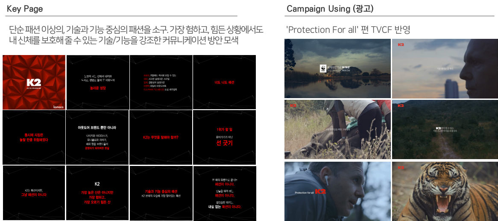
| 목적 | 2017 대선 홍보(광고) 제안을 위한 광고 전략 수립에 참여 |
| Key Page | 대선 홍보 전략 방향성 제시 — 브랜드 인식의 관점에서 No.1 보편타당 더불어민주당의 이미지를 구축하고, 대선의 승리에 기여하기 위해 장기적 관점의 국민브랜드 위상 강화 전략 수립 |
| Campaign Using | '나라를 나라답게' 슬로건의 신문 광고 게재 |
| 역할(Role) | Branding Strategy · Communication Strategy |
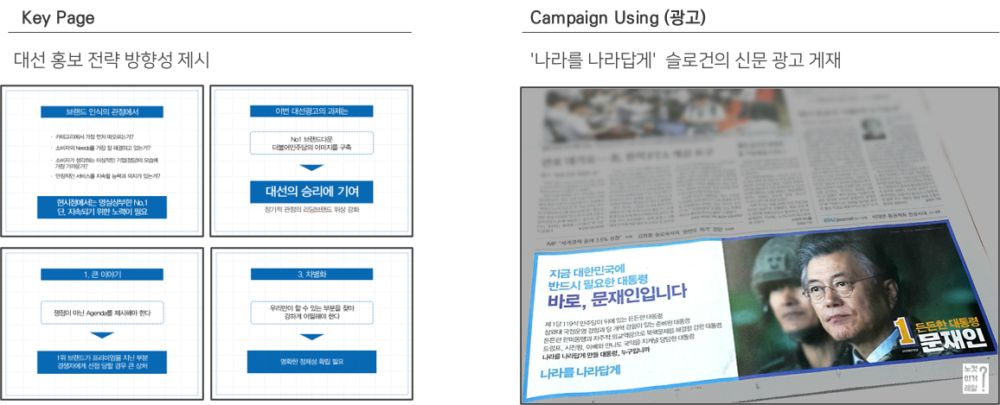
| 목적 | 소셜 빅데이터를 기반으로 맘스터치 신사업(봄바타–화덕피자 브랜드)의 시장 가능성과 소비자 요구를 분석하여 매장 내 신규 상품 확장 방향을 제시 |
| 배경 | 화덕피자는 기존 피자 시장에서 프리미엄 카테고리로 자리 잡아가며, 소비자의 점심 및 간편식 선호 증가와 관련된 트렌드가 형성됨 |
| 사용 데이터 | SNS 소셜 데이터 약 1,000만건 / 주요 키워드: 화덕, 피자, 화덕피자, 봄바타, 서브웨이 |
| 사용 도구 | Excel (데이터 정리 및 수치 분석) · PowerPoint (분석 결과 시각화 및 발표 자료 제작) · ㈜와이즈넛 D-MAP 분석 솔루션 (데이터 수집, 키워드 추출 및 분석) |
| 분석 결과 ① | 화덕피자는 '점심'과 '간편식' 상황에서 높은 선호도 — 일반 피자는 '저녁'과 조합이 높게 나타남 |
| 분석 결과 ② | 화덕피자는 보완재로 '샐러드'와의 조합이 강하게 나타났으며, 일반 피자는 '치킨'과 조합이 높은 경향 확인 |
| 결론 | 화덕피자의 점심 시장 확장을 위해 건강한 이미지를 강조한 신규 제품 라인과 프리미엄 브랜드 포지셔닝 전략 제안 |
| 활용 | 화덕피자 외 점심용 '샌드위치 중심 라인' 추가 / 화덕피자와 곁들일 수 있는 '샐러드' 제품 다양화 |
| 역할(Role) | Research Proposal Writing · Analysis Frame Design · Data Cleaning · Data Analysis · Analysis Report Writing · Presentation |
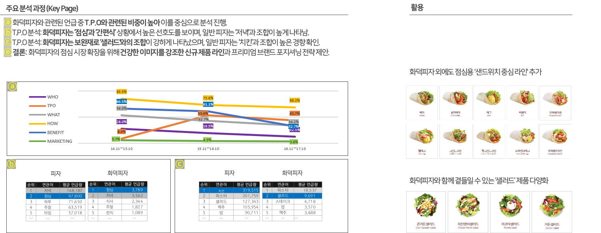
클릭하면 상세 내용을 확인할 수 있습니다.
| 캠페인명 | '전에 없던 세상이 타고 있다. LEADING TOMORROW' 편 제작 및 집행 |
| 배경 | Global Frontier 및 리더십 강화 지속을 위해, 현대엘리베이터의 4차 산업 기술력 및 미래 비전 캠페인을 전개 |
| 결과 | 19년도 기업 PR 캠페인 2위 달성 / 광고 시청 후 기업 호감도 43.2% → 66.0% 상승 · 현대엘리베이터의 주요 4차 산업 기술력(스마트 미러/인터렉티브 엘리베이터/인공지능 유지 관리 서비스 등)에 대한 호감도 및 긍정적 기대감 확대 |
| 역할(Role) | Branding Strategy · Communication Strategy · Contents Idea · Media Planning · Preparation for Filming · Executive (budget 등) |
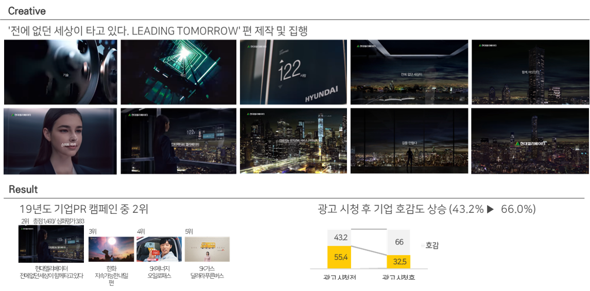
| 캠페인명 | '장성규, 보험회사를 가다' 편 제작 및 집행 |
| 배경 | 기존 금융 광고의 경우 바이럴 될 수 있는 소재가 거의 없어 활용성이 떨어지는 문제 존재. 또한 보험 광고의 낮은 열독률과 바이럴 소재 부족 문제 해결이 필요한 상황 |
| 전략 | 이를 위해 '워크맨' 장성규를 모델로 기용해 유튜브 캠페인을 진행하며, '장성규 보험회사를 가다' 편 광고를 통해 신선한 접근법과 화제성을 확보하며 브랜드 인지도를 강화 |
| Creative | 당시 유튜브에서 '워크맨'으로 조회수를 다수 달성하고 있는 장성규 모델 활용을 통한 소재 개발로 바이럴 효과 유도 |
| 역할(Role) | Branding Strategy · Communication Strategy · Contents Idea · Media Planning · Preparation for Filming · Executive (budget 등) |
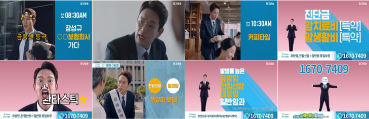
| 배경 | 비빔면 꽃 한정판 출시를 앞둔 시점, 제품 프로모션 홍보가 필요한 상황 · 둥지냉면·함흥비빔면 등 경쟁사의 신제품 공세 속에서 리딩 브랜드로서 시장 위상을 강화하기 위해 Fashionable/Fun 톤앤매너를 기반으로 캠페인을 진행 |
| 전략 | 메인 메시지로 '맛이란 말이 필요 없이 느껴져야 하는 것'을 설정하고, 탱고의 열정적인 춤과 비빔면의 relevance를 결합해 감각적이고 유쾌한 이미지를 강조한 TVCF를 제작 |
| Creative | 탱고 소재를 활용해 '비빔면'의 특징을 전달하며 프로모션을 고지 — 'Shell We 비빔?' 편 제작 및 집행 |
| 역할(Role) | Branding Strategy · Communication Strategy · Preparation for Filming |
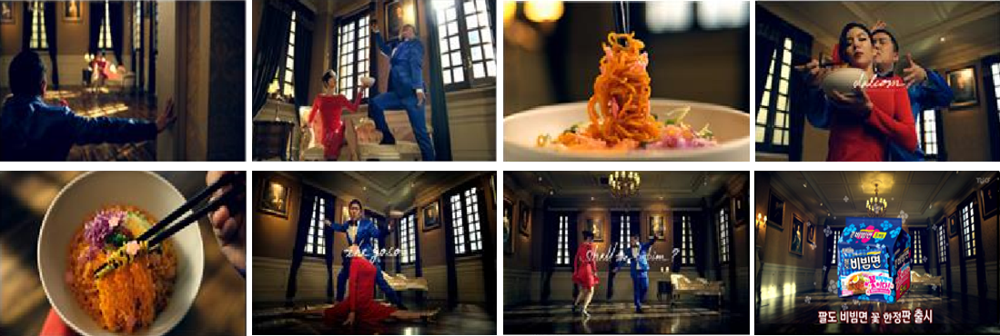
| 배경 | '와일드 씨드 퍼밍 세럼'의 피부 개선 효과를 알리기 위한 광고 제작 필요 → '킹콩세럼' 캠페인 진행 |
| Creative (Youtube) | '킹콩 세럼'이라는 슬로건을 활용해 브랜드 인지도 상승을 유도하는 유튜브 광고 제작 · '시들지 않는 탄력을 얻다. 킹콩세럼' 편 제작 및 집행 |
| Creative (Print) | '킹콩 세럼' 편 잡지 및 신문 광고 집행 |
| 역할(Role) | Branding Strategy · Communication Strategy · Copyrighting/Naming · Media Planning · Preparation for Filming · Executive(budget 등) |
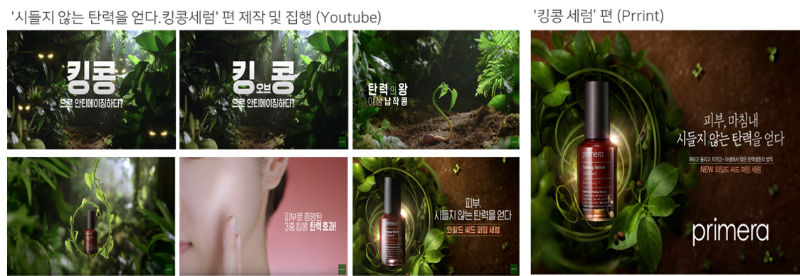
| 캠페인명 | '있을 때 잘하겠습니다. 탈모 증상 케어 샴푸 려 자양윤모' 편 TVCF 제작 및 집행 |
| 배경 | 려 자양윤모 제품 판매량 둔화 상태가 지속되는 상황 · 브랜드 리프레쉬를 위해 '있을 때 잘하자' 캠페인 진행 |
| 전략 (Creative) | 모델 박서준을 활용해 '있을 때 잘하자'는 위트 있는 메시지를 전달 |
| 역할(Role) | Branding Strategy · Executive (budget 등 집행 관리) |
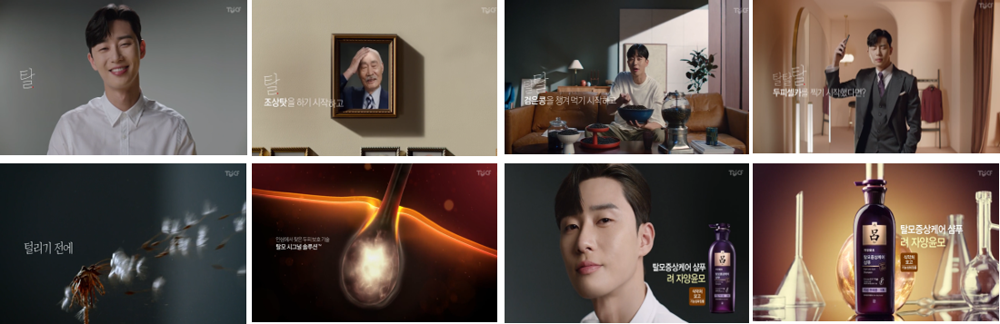
| 배경·과제 | 아이들의 놀이 환경이 점차 줄어드는 문제를 해결하기 위한 캠페인 제안 요청. '아이들의 놀 권리'의 중요성을 국민에게 효과적으로 알리는 캠페인 전략 수립 |
| 전략 | 기존의 정책 중심적 접근에서 벗어나, '아이의 입장'에서 어른들에게 놀 권리의 필요성을 소구하는 방향으로 전환 |
| 핵심 아이디어 | 페이스북·인스타그램 영상이 음소거 상태로 재생되는 특성을 활용 → 영상 이미지와 실제 사운드를 다르게 연출하는 독창적 방식. '아이의 마음은 주의 깊게 듣지 않으면 들리지 않는다'는 메시지 전달 |
| 슬로건 | '놀아도 괜찮아' — 메시지의 감성적 전달력을 높임 |
| 성과·의의 | 아이디어가 제작팀에서 채택 · 전략 부서(AP) 재직 중이었으나 카피라이터 역할을 수행해 CD 호평으로 본인 시안이 MAIN으로 집행 · 제작팀 CD로부터 카피라이터(CW) 스카우트 제안을 받을 만큼 긍정적 평가 · 광고 제작 첫 경험이라는 의미 있는 프로젝트 |
| 역할(Role) | Branding Strategy · Communication Strategy · Contents Idea · Copywriting/Naming |
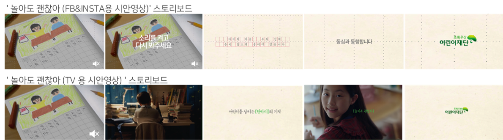
| 목적 | 저출산 고령사회 위원회가 지난 1년간 시행한 '아동돌봄 정책'에 대한 성과를 홍보하기 위한 홍보 영상 제작 |
| Creative | 정책에 대한 시민 인터뷰 영상을 주로 활용한 홍보영상을 제작 · '아동돌봄 정책성과 홍보영상' 편 제작 |
| 역할(Role) | Preparation for Filming · Executive (budget 등) |
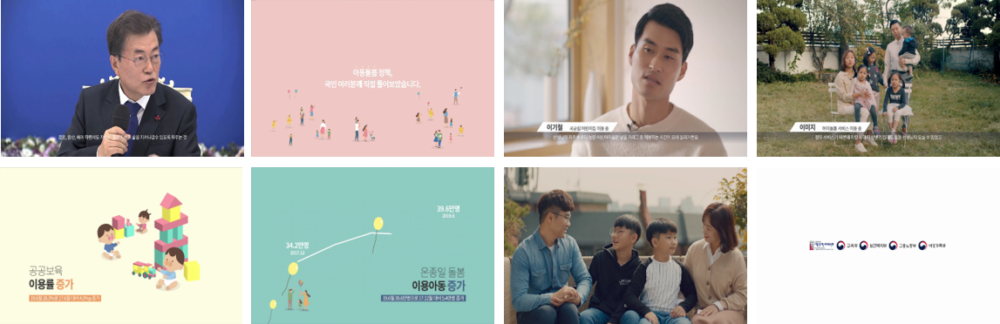
→ 식품·뷰티·금융·아웃도어·가구 등 20개+ 산업군에 걸쳐 소비자 데이터 기반 마케팅 전략 수립. 이 시기 개발한 7종의 자체 분석 프레임워크는 이후 IT 회사에서 분석 시스템 기획에 직접 활용됨.
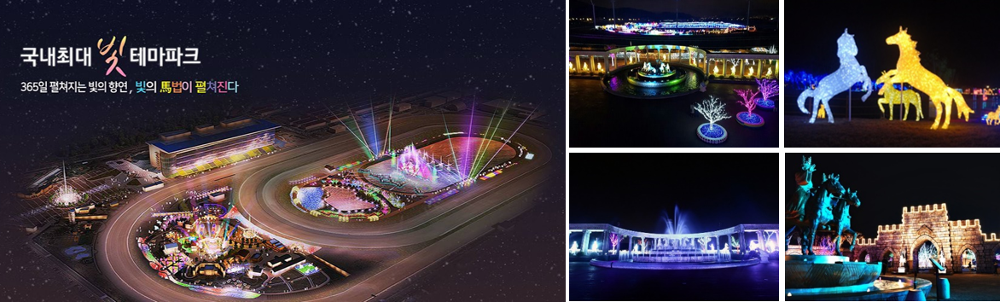
| 배경 | 경마 = 도박이라는 부정적 인식이 강하게 자리잡아 렛츠런파크의 이미지 또한 부정적으로 형성된 상황. 이미지 개선을 위한 '빛축제 조성 사업' 경쟁 PT 참여 |
| 분석 접근 | 부산 지역은 관광 명소로서의 인지도는 높지만 야간에 즐길 장소가 부족하다는 SNS 빅데이터 분석 결과를 근거로 제안서 작성 |
| 제안 방향 | 산책로·포토존 등 소비자 취향을 반영한 공간 기획 제안 · 취식 공간과 휴식 공간 부족에 대한 소비자 의견 수렴 반영 |
| 역할 | Brand Strategy · Space Strategy · Contents Idea 담당 · 대규모 경쟁 PT 과정에서 협업 업체와의 관계 관리 및 업무 노하우 습득 |
| 결과 | 수주 기여 · 2018년 7만 5천명 방문 |
→ 광고/마케팅 업계 첫 경험. 소셜 데이터를 실무에 처음 적용하며 데이터 기반 전략 수립의 가능성을 체감한 시점.
🏆 크리에이티브 아레나 파이널 평가 점수 1위 (2015) — 삼성 제일기획 주관 · 300팀 서바이벌 · 코엑스 무대 PT